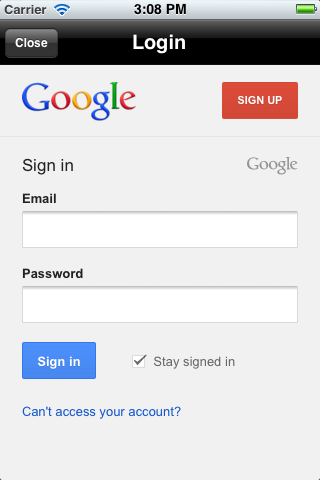
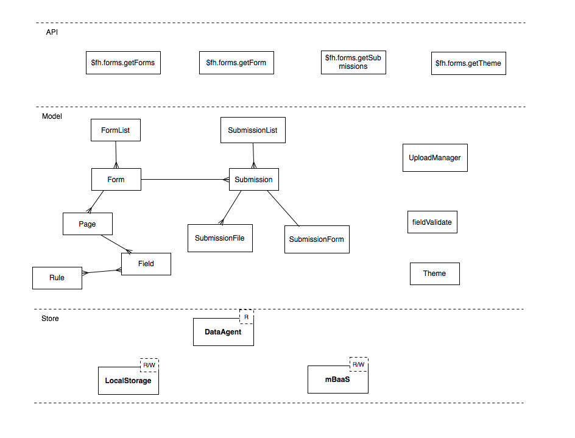

Client API
For Red Hat Mobile Application Platform Hosted 3
Abstract
- Preface
- 1. $fh.auth
- 2. $fh.cloud
- 3. $fh.getCloudURL
- 4. $fh.getFHParams
- 5. $fh.forms
- 5.1. SDK Structure
- 5.2. $fh.forms.init
- 5.3. $fh.forms.getForms
- 5.4. $fh.forms.getForm
- 5.5. $fh.forms.getTheme
- 5.6. $fh.forms.getSubmissions
- 5.7. $fh.forms.downloadSubmission
- 5.8. $fh.forms.log
- 5.9. $fh.forms.getLogs
- 5.10. Global Events
- 5.11. $fh.forms.models.forms
- 5.11.1. Details
- 5.11.2. $fh.forms.models.forms.clearAllForms
- 5.11.3. $fh.forms.models.forms.isFormUpdated
- 5.11.4. $fh.forms.models.forms.getFormMetaById
- 5.11.5. $fh.forms.models.forms.refresh
- 5.11.6. $fh.forms.models.forms.clearLocal
- 5.11.7. $fh.forms.models.forms.getFormsList
- 5.11.8. $fh.forms.models.forms.size
- 5.12. $fh.forms.models.Form
- 5.12.1. Details
- 5.12.2. $fh.forms.models.Form.constructor()
- 5.12.3. $fh.forms.models.Form.getLastUpdate()
- 5.12.4. $fh.forms.models.Form.getPageModelList()
- 5.12.5. $fh.forms.models.Form.getName()
- 5.12.6. $fh.forms.models.Form.getDescription()
- 5.12.7. $fh.forms.models.Form.getFormId()
- 5.12.8. $fh.forms.models.Form.getFieldModelById()
- 5.12.9. $fh.forms.models.Form.newSubmission()
- 5.12.10. $fh.forms.models.Form.removeFromCache()
- 5.12.11. $fh.forms.models.Form.refresh()
- 5.12.12. $fh.forms.models.Form.clearLocal()
- 5.13. $fh.forms.models.Page
- 5.14. $fh.forms.models.Field
- 5.14.1. Details
- 5.14.2. $fh.forms.models.Field.isRequired()
- 5.14.3. $fh.forms.models.Field.isRepeating()
- 5.14.4. $fh.forms.models.Field.getType()
- 5.14.5. $fh.forms.models.Field.getName()
- 5.14.6. $fh.forms.models.Field.getCode()
- 5.14.7. $fh.forms.models.Field.getHelpText()
- 5.14.8. $fh.forms.models.Field.validate(inputValue)
- 5.14.9. $fh.forms.models.Field.getRules()
- 5.14.10. $fh.forms.models.Field.getCheckboxOptions()
- 5.14.11. $fh.forms.models.Field.getRadioOption()
- 5.15. $fh.forms.models.submissions
- 5.15.1. $fh.forms.models.submissions.getSubmissions()
- 5.15.2. $fh.forms.models.submissions.getSubmissionMetaList()
- 5.15.3. $fh.forms.models.submissions.findByFormId(formId)
- 5.15.4. $fh.forms.models.submissions.clear(cb)
- 5.15.5. $fh.forms.models.submissions.getDrafts()
- 5.15.6. $fh.forms.models.submissions.getPending()
- 5.15.7. $fh.forms.models.submissions.getSubmitted()
- 5.15.8. $fh.forms.models.submissions.getError()
- 5.15.9. $fh.forms.models.submissions.getInProgress()
- 5.15.10. $fh.forms.models.submissions.getSubmissionByMeta(meta,cb)
- 5.15.11. $fh.forms.models.submissions.getSubmissionByLocalId(localId,cb)
- 5.15.12. $fh.forms.models.submissions.getSubmissionByRemoteId(remoteId,cb)
- 5.16. $fh.forms.models.Submission
- 5.16.1. Details
- 5.16.2. $fh.forms.models.Submission.saveDraft(cb)
- 5.16.3. $fh.forms.models.Submission.submit()
- 5.16.4. $fh.forms.models.Submission.getStatus()
- 5.16.5. $fh.forms.models.Submission.addComment()
- 5.16.6. $fh.forms.models.Submission.getComments()
- 5.16.7. $fh.forms.models.Submission.removeComment(timeStamp)
- 5.16.8. $fh.forms.models.Submission.addInputValue(params,cb)
- 5.16.9. $fh.forms.models.Submission.startInputTransaction()
- 5.16.10. $fh.forms.models.Submission.endInputTransaction(isSucceed)
- 5.16.11. $fh.forms.models.Submission.reset()
- 5.16.12. $fh.forms.models.Submission.getForm(cb)
- 5.16.13. $fh.forms.Submission.removeFieldValue(fieldId, [index])
- 5.16.14. $fh.forms.Submission.getInputValueByFieldId(field,cb)
- 5.16.15. Submission Events
- 6. $fh.hash
- 7. $fh.init
- 8. $fh.mbaas
- 9. $fh.push
- 10. $fh.sec
- 11. $fh.sync
- 12. $fh.act
Preface
Table key:
C - Cordova
W - Web Apps
A2 - Android SDK
I1 - iOS Objective-C
I2 - SDK iOS
S - Swift SDK
X - Xamarin
Chapter 1. $fh.auth
$fh.auth(options, success, failure);
Authenticate and optionally authorise a user via access rights management. Note that in order to use fh.auth, you will need to have a domain Administrator account. Read about our user levels here: User Administration. If you intend to use $fh.auth against an oauth provider, take a look at setting up an OAuth Policy.
Generally speaking, if the Auth type is FeedHenry or LDAP, you just need to construct a view to allow users to enter their credentials and set them on the auth request instance.
If the auth policy type is OAuth, the authentication process is quite complicated. The user has to login to the OAuth provider’s login page and give permission to allow the application to access his/her information.
To make this process easier to handle, the native SDKs (iOS, Android and .NET) provide extra UI components to handle this seemlessly: the UI component appears on the screen and loads the OAuth provider’s authentication page. The component will know when the OAuth process is finished and close itself automatically and pass the results back to the success or failure function. The UI component will look like this:

Supported Platforms
JavaScript SDK
- Cordova
- Web Apps
- Android SDK
- iOS Objective-C SDK
- iOS Swift SDK
.NET SDK
- Windows
- Xamarin
For detailed version information, see Supported Configurations.
1.1. Example
JavaScript
// LDAP or Platform User Example
$fh.auth({
"policyId": "My LDAP Auth Policy", // name of auth policy to use - see link:{ProductFeatures}#administration[Auth Policies Administration] for details on how to configure an auth policy
"clientToken": "myAppId", // Your App ID
"endRedirectUrl": window.location.href, // The URL to return to after authentication. Optional
"params": { // the parameters associated with the requested auth policy - see below for full details.
"userId": "joe@bloggs.com", // LDAP or Platform username
"password": "password" // LDAP or Platform password
}
}, function (res) {
// Authentication successful - store sessionToken in variable
var sessionToken = res.sessionToken; // The platform session identifier
var authResponse = res.authResponse; // The authentication information returned from the authentication service.
// This may include things such as validated email address,
// OAuth token or other response data from the authentication service
}, function (msg, err) {
var errorMsg = err.message;
/* Possible errors:
unknown_policyId - The policyId provided did not match any defined policy. Check the auth policies defined. See link:{ProductFeatures}#administration[Auth Policies Administration]
user_not_found - The auth policy associated with the policyId provided has been set up to require that all users authenticating exist on the platform, but this user does not exists.
user_not_approved - - The auth policy associated with the policyId provided has been set up to require that all users authenticating are in a list of approved users, but this user is not in that list.
user_disabled - The user has been disabled from logging in.
user_purge_data - The user has been flagged for data purge and all local data should be deleted.
device_disabled - The device has been disabled. No user or apps can log in from the requesting device.
device_purge_data - The device has been flagged for data purge and all local data should be deleted.
*/
if (errorMsg === "user_purge_data" || errorMsg === "device_purge_data") {
// User or device has been black listed from administration console and all local data should be wiped
} else {
alert("Authentication failed - " + errorMsg);
}
});
// OAuth 2.0 Example
// OAuth does not require any params, instead the "authCallback" param should be set on the $fh.auth call.
// This should be a function name that you have defined, and will be called after Auth has completed.
$fh.auth({
"policyId": "My OAuth Policy",
"clientToken": "myAppId",
"authCallback": "authLoginCallback",
"endRedirectUrl": window.location.href
}, function () {
//
}, function () {
//
});
var authLoginCallback = function(err, res) {
if (!err) {
// Authentication successful - store sessionToken in variable
var sessionToken = res.sessionToken;
} else {
alert("Authentication failed - " + err.message);
}
}
Android (Java)
If you want to use the built-in OAuth handler as described in the example below, you need to add the following configuration into the application element of your application’s AndroidManifest.xml file
<application> ... <activity android:name="com.feedhenry.sdk.oauth.FHOAuthIntent" /> </application>
Before invoking the Auth code, first ensure that FH.init code is initialized. For an example, see here.
//Example code to authenticate a user with username and password that are defined in an auth policy called "MyFeedHenryPolicy"
private void loginWithFh(){
EditText userField = (EditText) findViewById(R.id.fh_login_user);
EditText passField = (EditText) findViewById(R.id.fh_login_password);
String userName = userField.getText().toString();
String password = passField.getText().toString();
if("".equals(userName)){
FhUtil.showMessage(this, "Error", "User name is empty");
return;
}
if("".equals(password)){
FhUtil.showMessage(this, "Error", "Password is empty");
return;
}
try{
FHAuthRequest authRequest = FH.buildAuthRequest("MyFeedHenryPolicy", userName, password);
authRequest.executeAsync(new FHActCallback() {
@Override
public void success(FHResponse resp) {
Log.d("FHLoginActivity", "Login success");
}
@Override
public void fail(FHResponse resp) {
Log.d("FHLoginActivity", "Login fail");
}
});
}catch(Exception e){
e.printStackTrace();
}
}If the auth policy type is OAuth, an Intent will be invoked to load the OAuth provider’s authentication page. It will know when the OAuth process is finished and will close itself automatically and pass the results back to your success or failure function. To enable this, all you have to do is to call the setPresentingActivity method of the FHAuthRequest instance with your application’s context.
private void doOAuth(){
try{
FHAuthRequest authRequest = FH.buildAuthRequest();
authRequest.setPresentingActivity(this);
authRequest.setAuthPolicyId("MyGooglePolicy"); //"MyGooglePolicy" should be replaced with policy id you created
authRequest.executeAsync(new FHActCallback() {
@Override
public void success(FHResponse resp) {
Log.d("FHAuthActivity", resp.getJson().toString());
}
@Override
public void fail(FHResponse resp) {
Log.d("FHAuthActivity", resp.getErrorMessage());
}
});
} catch(Exception e){
Log.e("FHAuthActivity", e.getMessage(), e);
}
}
If the setPresentingActivity method is not called, you will have the chance to handle this by your own code. For example:
private void doOAuth(){
try{
FHAuthRequest authRequest = FH.buildAuthRequest();
authRequest.setAuthPolicyId("MyGooglePolicy"); //"MyGooglePolicy" should be replaced with policy id you created
authRequest.executeAsync(new FHActCallback() {
@Override
public void success(FHResponse resp) {
Log.d("FHAuthActivity", resp.getJson().toString());
//because the setPresentingActivity method is not called, the reponse will contain a URL which should be used for user to login. Normally it should be loaded into a WebView
String url = resp.getJson().getString("url");
// load the url in a WebView, and then a seriers of redirects will happen
// the last url will contain a string "status=complete"
// and there will be a query parameter called "authResponse" in that url
// the value of that parameter is the data returned from the OAuth provided (JSON stringified and URL encoded)
}
@Override
public void fail(FHResponse resp) {
Log.d("FHAuthActivity", resp.getErrorMessage());
}
});
} catch(Exception e){
Log.e("FHAuthActivity", e.getMessage(), e);
}
}iOS (Objective-C)
//Example to authenticate user using username and password
NSString* userName = self.usernameField.text;
if(!userName){
return [self showMessage:@"Error" message:@"User Name field is required"];
}
NSString* password = self.passwordField.text;
if(!password){
return [self showMessage:@"Error" message:@"Password field is required"];
}
FHAuthReqeust* authRequest = [FH buildAuthRequest];
[authRequest authWithPolicyId:@"MyFeedHenryPolicy" UserId:userName Password:password]; //"MyFeedHenryPolicy" should be replaced with policy id you created
void (^success)(FHResponse *)=^(FHResponse * res){
NSLog(@"parsed response %@ type=%@",res.parsedResponse,[res.parsedResponse class]);
if ([[[res parsedResponse] valueForKey:@"status"] isEqualToString:@"error"]) {
[self showMessage:@"Failed" message:%5Bres.parsedResponse valueForKey:@"message"]];
} else {
[self showMessage:@"Success" message:res.rawResponseAsString];
}
};
void (^failure)(FHResponse *)=^(FHResponse* res){
NSLog(@"parsed response %@ type=%@",res.parsedResponse,[res.parsedResponse class]);
[self showMessage:@"Failed" message:res.rawResponseAsString];
};
[authRequest execAsyncWithSuccess:success AndFailure:failure];
If the auth policy type is OAuth, a UI component will be invoked to display the OAuth provider’s authentication page. The component waits until the OAuth process is finished, gets closed automatically afterwards, and passes the authentication results back to your success or failure function. To enable this, set the parentViewController property of the FHAuthRequest instance with an instance of UIViewController of your application.
FHAuthReqeust * authRequest = [FH buildAuthRequest];
[authRequest authWithPolicyId:@"MyOAuthPolicy"]; //"MyOAuthPolicy" should be replaced with policy id you created
authRequest.parentViewController = viewController; //Important, this will enable the built-in OAuth hanlder
void (^success)(FHResponse *)=^(FHResponse * res){
NSLog(@"parsed response %@ type=%@",res.parsedResponse,[res.parsedResponse class]);
if ([[[res parsedResponse] valueForKey:@"status"] isEqualToString:@"error"]) {
[self showMessage:@"Failed" message:%5Bres.parsedResponse valueForKey:@"message"]];
} else {
[self showMessage:@"Success" message:%5Bres.parsedResponse JSONString]];
}
};
void (^failure)(FHResponse *)=^(FHResponse* res){
NSLog(@"parsed response %@ type=%@",res.parsedResponse,[res.parsedResponse class]);
[self showMessage:@"Failed" message:res.rawResponseAsString];
};
[authRequest execAsyncWithSuccess:success AndFailure:failure]If the parentViewController property is not set, you will have the chance to handle this by your own code. For example:
FHAuthReqeust* authRequest = [FH buildAuthRequest];
[authRequest authWithPolicyId:@"MyOAuthPolicy"]; //"MyOAuthPolicy" should be replaced with policy id you created
void (^success)(FHResponse *)=^(FHResponse * res){
NSLog(@"parsed response %@ type=%@",res.parsedResponse,[res.parsedResponse class]);
//because the parentViewController is not set, the reponse will contain a URL which should be used for user to login. Normally it should be loaded into a WebView
NSString* oauthUrl = [res.parsedResponse valueForKey:@"url"];
NSURL* request = [NSURL URLWithString:oauthUrl];
// load the url in a WebView, and then a seriers of redirects will happen
// the last url will contain a string "status=complete"
// and there will be a query parameter called "authResponse" in that url
// the value of that parameter is the data returned from the OAuth provided (JSON stringified and URL encoded)
};
void (^failure)(FHResponse *)=^(FHResponse* res){
NSLog(@"parsed response %@ type=%@",res.parsedResponse,[res.parsedResponse class]);
[self showMessage:@"Failed" message:res.rawResponseAsString];
};
[authRequest execAsyncWithSuccess:success AndFailure:failure];iOS (Swift)
//Example to authenticate user using username and password
FH.auth("MyFeedHenryPolicy", userName: "me", password: "password", completionHandler: { (response: Response, error: NSError?) -> Void in
if let error = error {
print("Error \(error)")
return
}
if let response = response.parsedResponse as? [String: String]{
if let status = response["status"] where status == "ok" {
print("Response \(response)")
} else if let status = response["status"] where status == "error" {
let message = response["message"] ?? ""
print("OAuth failed \(message)")
}
}
})
If the auth policy type is OAuth, a UI component will be invoked to load the OAuth provider’s authentication page. The component waits until the OAuth process is finished, gets closed automatically afterwards, and passes the authentication results back to your success or failure function. To enable this, set the parentViewController property of the AuthRequest instance with the instance of UIViewController for your application.
let request = FH.authRequest("MyOAuthPolicy") //"MyOAuthPolicy" should be replaced with policy id you created
request.parentViewController = viewController //Important, this will enable the built-in OAuth handler
request.exec({ (response: Response, error: NSError?) -> Void in
if let error = error {
print("Error connecting \(error)")
return
}
if let response = response.parsedResponse as? [String: String] {
if let status = response["status"] where status == "ok" {
print("Response \(response)")
} else if let status = response["status"] where status == "error" {
let message = response["message"] ?? ""
print("OAuth failed \(message)")
}
}
})
If the parentViewController property is not set, you will have the chance to handle this by your own code. For example:
let request = FH.authRequest("MyOAuthPolicy") //"MyOAuthPolicy" should be replaced with policy id you created
request.exec({ (response: Response, error: NSError?) -> Void in
if let error = error {
print("Error connecting \(error)")
return
}
if let response = response.parsedResponse as? [String: String] {
if let status = response["status"] where status == "ok" {
print("Response \(response)")
// because the parentViewController is not set, the response will contain a URL which
// should be used for user to login. Normally it should be loaded into a WebView
if let urlString = response["url"] {
let url = NSURL(string: urlString)
// load the url in a WebView, and then a series of redirects will happen
// the last url will contain a string "status=complete"
// and there will be a query parameter called "authResponse" in that url
// the value of that parameter is the data returned from the OAuth provided (JSON stringified and URL encoded).
} } else if let status = response["status"] where status == "error" {
let message = response["message"] ?? ""
print("OAuth failed \(message)")
}
}
}).NET (C#)
//Example to authenticate user using username and password
string authPolicy = "MyFeedHenryPolicy"; //"MyFeedHenryPolicy" should be replaced with policy id you created
string username = this.usernameField.Text;
string password = this.passwordField.Text;
FHResponse authRes = await FH.Auth(authPolicy, username, password);
if (null == authRes.Error)
{
//user successfully logged in
}
else
{
//login failed, show error
ShowMessage(authRes.Error.Message);
}
If the auth policy type is OAuth, a UI component will be invoked to load the OAuth provider’s authentication page. It will know when the OAuth process is finished and will close itself automatically and pass the results back to your success or failure function.
string authPolicy = "TestGooglePolicy"; //"TestGooglePolicy" should be replaced with policy id you created
//When next line is executed, the user will be prompted with a new view to
//allow them enter their credentials on the OAuth provider's login page,
//and the result will be returned in FHResponse
FHResponse res = await FH.Auth(authPolicy);
if (null == res.Error)
{
//user successfully logged in
}
else
{
//login failed, show error
ShowMessage(res.Error.Message);
}
If you don’t want to use the default OAuth login handler provided by the SDK, you can provide your own implementation. All you have to do is to create an implementation for the IOAuthClientHandlerService interface, and use it like this:
//create a new instance of the custom IOAuthClientHandlerService IOAuthClientHandlerService authHandler = new MyOAuthHandler(); //create a new auth request FHAuthRequest authRequest = new FHAuthRequest(); authRequest.SetAuthPolicyId(policyId); //set the request to use the custome oauth handler authRequest.SetOAuthHandler(authHandler); FHResponse res = await authRequest.execAsync();
1.2. Validate Sessions
To use this feature, you need to make sure the following versions of client and cloud SDKs are used:
- fh-js-sdk: >= 2.6.0
- fh-ios-sdk: >= 2.2.8
- fh-android-sdk: >= 2.2.0
- fh-dotnet-sdk: >= 1.2.0
- fh-mbaas-api: >=4.10.0
The sessionToken returned by the auth API will be persisted on the device, and will be added to all the cloud API calls afterwards automatically.
On the client side, new APIs are added to support session operations:
JavaScript
//To check if user is already authenticated
$fh.auth.hasSession(function(err, exist){
if(err) {
console.log('Failed to check session');
return;
}
if(exist){
//user is already authenticated
//optionally we can also verify the session is actually valid from client. This requires network connection.
$fh.auth.verify(function(err, valid){
if(err){
console.log('failed to verify session');
return;
}
if(valid){
console.log('session is valid');
} else {
console.log('session is not valid');
}
});
} else {
//user is not authenticated
}
});
//When the user is logging out, the session should be cleared
$fh.auth.clearSession(function(err){
});
Java
//To check if user is already authenticated
boolean exists = FHAuthSession.exists();
if (exists) {
//user is already authenticated
//optionally we can also verify the session is actually valid from client. This requires network connection.
FHAuthSession.verify(new FHAuthSession.Callback() {
@Override
public void handleSuccess(final boolean isValid) {
if (isValid) {
//The session is valid, notify the application
//You may now access the session token using FHAuthSession.getToken()
} else {
//The session is not valid. Clear the application's
//state and authenticate again
}
}
@Override
public void handleError(FHResponse resp) {
//Something went wrong with the network call.
}
}, false);
} else {
//Not logged in, notify the application.
}
Use FHAuthSession.clear(boolean synchronous) to log the client out of the platform. Note that this method performs network access. If it is called from the main looper, set the synchronous argument to false to prevent the network operation from blocking the looper thread and causing Android to throw a NetworkOnMainThreadException.
FHAuthSession.clear(false);
//To check if user is already authenticated
BOOL hasSession = [FH hasAuthSession];
if(hasSession) {
//optionally we can also verify the session is acutally valid from client. This requires network connection.
[FH verifyAuthSessionWithSuccess:nil AndFailure:nil];
}
//When the user is logging out, the session should be cleared
[FH clearAuthSessionWithSuccess:nil AndFailure:nil];.NET (C#)
//To check if user is already authenticated
FHAuthSession session = FH.GetAuthSession();
Boolean exists = session.Exists();
//optionally we can also verify the session is actually valid from client. This requires network connection.
if(exists) {
bool valid = await session.Verify();
}
//When the user is logging out, the session should be cleared
session.Clear();
There is also a middleware provided in the fh-mbaas-api module to validate the sessionToken in the requests. This will make it a lot easier to see if a request is from an authenticated user. All you have to do is something like this:
var mbaasExpress = require('fh-mbaas-api').mbaasExpress();
var express = require('express');
var router = new express.Router();
//This will protect the router and only accept requests from authenticated users.
//If a sessionToken is valid, you can choose to cache it so that it doesn't need to be checked again.
router.use(mbaasExpress.fhauth({cache: true, expire: 60*60}));1.3. Create your own authentication providers
With the introduction of mBaaS auth policy type, you can now create your own authenticate providers.
All you have to do is to create a mBaaS service that will:
- perform the authentication
-
return a JSON response containing a
sessionTokenkey
As described above, the sessionToken will then be added to all the cloud calls by the client SDK (via a header called X-FH-SESSIONTOKEN). However, since the sessionToken is generated by the mBaaS service, the session valdiation middleware provided in fh-mbaas-api will not work anymore. You need to provide your own middleware to verify the value of sessionToken. But it also means you can add more information to the requests during the validation process, for example, populate user information into the request objects as well.
Chapter 2. $fh.cloud
$fh.cloud(options, success, failure);
Call ANY cloud URLs which you have defined in the Cloud App using AJAX. For example, if you are using Express to defined endpoints in your Cloud Apps, you should use this API instead of $fh.act.
Supported Platforms
JavaScript SDK
- Cordova
- Web Apps
- Android SDK
- iOS Objective-C SDK
- iOS Swift SDK
.NET SDK
- Windows
- Xamarin
For detailed version information, see Supported Configurations.
2.1. Example
JavaScript
$fh.cloud({
"path": "/api/v1/user/create", //only the path part of the url, the host will be added automatically
"method": "POST", //all other HTTP methods are supported as well. For example, HEAD, DELETE, OPTIONS
"contentType": "application/json",
"data": { "username": "testuser"}, //data to send to the server
"timeout": 25000 // timeout value specified in milliseconds. Default: 60000 (60s)
}, function(res) {
// Cloud call was successful. Alert the response
alert('Got response from cloud:' + JSON.stringify(res));
}, function(msg,err) {
// An error occurred during the cloud call. Alert some debugging information
alert('Cloud call failed with error message:' + msg + '. Error properties:' + JSON.stringify(err));
});
Android (Java)
//build the request object with request path, method, headers and data
Header[] headers = new Header[1];
headers[0] = new BasicHeader("contentType", "application/json");
//The request should have a timeout of 25 seconds, 10 is the default
FHHttpClient.setTimeout(25000);
FHCloudRequest request = FH.buildCloudRequest("/api/v1/user/create", "POST", headers, new JSONObject().put("username", "testuser"));
//the request will be executed asynchronously
request.executeAsync(new FHActCallback() {
@Override
public void success(FHResponse res) {
//the function to execute if the request is successful
try{
//process response data
} catch(Exception e){
Log.e(TAG, e.getMessage(), e);
}
}
@Override
public void fail(FHResponse res) {
//the function to execute if the request is failed
Log.e(TAG, res.getErrorMessage(), res.getError());
}
});
iOS (Objective-C)
NSDictionary * headers = [NSDictionary dictionaryWithObject:@"application/json" forKey:@"contentType"];
NSDictionary * data = [NSDictionary dictionaryWithObject:@"testuser" forKey:@"username"];
FHCloudRequest * action = (FHCloudRequest *) [FH buildCloudRequest:@"/api/v1/user/create" WithMethod:@"POST" AndHeaders:headers AndArgs:data];
// change timeout (default value: 60s)
action.requestTimeout = 25.0;
[action execAsyncWithSuccess:^(FHResponse * actRes){
//the actRes will contain 10 tweets about "feedhenry"
//the JSON response from the cloud will be parsed to NSDictionary automatically
NSDictionary * resData = actRes.parsedResponse;
// ...
} AndFailure:^(FHResponse * actFailRes){
//if there is any error, you can check the rawResponse string
NSLog(@"Failed to read tweets. Response = %@", actFailRes.rawResponse);
}
];
iOS (Swift)
let args = ["key1": "value1", "key2": "value2"] as [String : AnyObject]
FH.cloud(path: "/path",
method: HTTPMethod.POST,
args: args,
completionHandler: {(resp: Response, error: NSError?) -> Void in
if error != nil {
print("Cloud Call Failed: " + (error?.localizedDescription)!)
return
}
if let parsedRes = resp.parsedResponse as? [String:String] {
print("Success: " + parsedRes["jsonKey"]!)
}
})
.NET (C#)
var headers = new Dictionary<string, string>; {{"contentType", "application/json"}};
var data = new Dictionary<string, object> {{"username", "testuser"}};
//change the timeout to 60 seconds, default is 30 seconds
FH.TimeOut = TimeSpan.FromSeconds(60);
var response = await FH.Cloud("/api/v1/user/create", "POST", headers, data);
if(null == response.Error)
{
//no error occured, the request is successful
var rawResponseData = response.RawResponse;
//you can get it as JSONObject (require Json.Net library)
var resJson = response.GetResponseAsJObject();
//process response data
}
else
{
//error occured during the request, deal with it.
//More infomation can be access from response.Error.InnerException
}
Chapter 3. $fh.getCloudURL
$fh.getCloudURL();
Get the URL of the Cloud App that the current Client App is communicating with. Should only be used after the SDK is initialized.
Once you have the URL of the Cloud App, you can use any other HTTP/AJAX client to communicate with the Cloud App. However, the downside of this approach is that your app won’t be able to use the analytics service provided by the platform as some meta data is missing in the requests, or if the endpoints are secured, you will not be able to call them without providing the API keys.
To make it easier, the SDKs also have APIs to provide this meta data as request parameters or headers. You just need to get the data and add it to the requests either as part of the request body or request headers. See $fh.getFHParams.
Supported Platforms
JavaScript SDK
- Cordova
- Web Apps
- Android SDK
- iOS Objective-C SDK
- iOS Swift SDK
.NET SDK
- Windows
- Xamarin
For detailed version information, see Supported Configurations.
3.1. Example
JavaScript
var cloud_url = $fh.getCloudURL();
Android (Java)
String cloudAppHost = FH.getCloudHost();
iOS (Objective-C)
NSString * cloudAppHost = [FH getCloudHost];
.NET (C#)
string cloudAppHost = FH.GetCloudHost();
Chapter 4. $fh.getFHParams
$fh.getFHParams();
This method will return the meta data added by the FH SDK for each cloud request. If you choose to use another library to communicate with the Cloud App, you should add this data to the request body or as headers. To get the Cloud App url, see $fh.getCloudURL.
Normally, you don’t need to modify the meta data at all. But if you are interested, the meta data includes the following keys and values:
- appid: the id of the app
- appkey: the api key of the app
- projectid: the id of the project
- cuid: a unique id genereated for the client
- destination: the platform the Client App is running on. For example, iOS, Android, Web
- sdk_version: the version of the sdk
- connectiontag: connectiontag for the app
If the meta data is sent in the request body, it should be the value of a special key called "__fh". See example below.
Some SDKs can provide this meta data as request headers. In this case, the name of each header will be like "X-FH-<meta data name>", for example, "X-FH-appid".
Supported Platforms
JavaScript SDK
- Cordova
- Web Apps
- Android SDK
- iOS Objective-C SDK
- iOS Swift SDK
.NET SDK
- Windows
- Xamarin
For detailed version information, see Supported Configurations.
4.1. Example
JavaScript
var fhparams = $fh.getFHParams(); //then it should be added to your request body under the key "__fh" body.__fh = fhparams;
Android (Java)
To get the request meta data as a JSON object:
JSONObject fhParams = FH.getDefaultParams();
You can get the meta data as HTTP headers as well:
Header[] fhParamHeaders = FH.getDefaultParamsAsHeaders(null);
iOS (Objective-C)
To get the request meta data as a NSDictionary:
NSDictionary * fhParams = [FH getDefaultParams];
You can get the meta data as HTTP headers in a NSDictionary:
NSDictionary * fhParamHeaders = [FH getDefaultParamsAsHeaders];
.NET (C#)
To get the request meta data as a Dictionary:
IDictionary <string, object> fhParams = FH.GetDefaultParams();
You can get the meta data as HTTP headers in a Dictionary:
IDictionary <string, string> fhParamHeaders = FH.GetDefaultParamsAsHeaders();
Chapter 5. $fh.forms
To use $fh.forms, you must initialize it using $fh.forms.init. However, to use $fh.forms.init, you must call $fh.init.
$fh.init must complete before using $fh.forms.init. For more information, see fh-init.
Supported Platforms
JavaScript SDK
- Cordova
- Web Apps
For detailed version information, see Supported Configurations.
5.1. SDK Structure
5.1.1. Core

5.2. $fh.forms.init
$fh.forms.init(params, callback);
5.2.1. Details
Initialise appForm SDK. Currently the params is not used so pass in empty JSON object. callback will be called when initialisation finished.
5.2.2. Example
var params = {};
$fh.forms.init(params, function(err) {
if (err) console.error(err);
// Forms initialised ok if no error
});5.3. $fh.forms.getForms
$fh.forms.getForms(params, callback);
5.3.1. Details
Retrieves an array of Form models. Can be loaded from the server if the 'fromRemote' parameter is set to true, or from local storage if set to false.
5.3.2. Example
var params = {
"fromRemote": true
};
$fh.forms.getForms(params, function(err, forms){
if(err) console.error(err);
// forms is an instance of $fh.forms.models.forms
// See Models section for details of its API
// for example, getFormsList() returns an array of Forms models
var formsList = forms.getFormsList();
console.log(formsList);
});5.4. $fh.forms.getForm
$fh.forms.getForm(params, callback);
5.4.1. Details
Retrieves a form based on a specified ID.
5.4.2. Example
var params = {
"fromRemote" : true,
"formId" : "1234"
};
$fh.forms.getForm(params, function(err, form){
if(err) console.error(err);
var formName = form.getName();
var formDesc = form.getDescription();
console.log('Form Name: ', formName, 'Form Desc: ', formDesc);
});5.5. $fh.forms.getTheme
$fh.forms.getTheme(params, callback);
5.5.1. Details
Retrieves a theme. If the 'css' parameter is set to true, css is returned. If it is set to false, a Theme object is returned.
5.5.2. Example
var params = {
"css" : true //if set to true, returns css.
};
$fh.forms.getTheme(params, function(err, theme){
if(err) console.error(err);
console.log(theme);
});5.6. $fh.forms.getSubmissions
$fh.forms.getSubmissions(options, callback);
5.6.1. Details
Returns a list of submissions that have been successfully completed.
5.6.2. Example
var params = {};
$fh.forms.getSubmissions(params, function (err, submissions) {
if (err) console.error(err);
console.log('Array of completed submissions', submissions);
});5.7. $fh.forms.downloadSubmission
5.7.1. Details
Triggers the download of a submission.
There are two forms of this API.
5.7.2. Example: Callback Passed
In this example, passing a callback to the $fh.forms.downloadSubmission function means that the callback will only be called when the submission, including all files, has fully completed downloading.
var params = {
'submissionId': "<< ID of the submission stored in the cloud >>"
};
//Downloading the submission.
//If the submission has already been downloaded to local memory, it will be loaded from there instead of downloading from the cloud.
$fh.forms.downloadSubmission(params, function(err, downloadedSubmission){
if(err){
return console.error(err);
}
//The form that the submission was submitted against is sent back with the submission from the cloud.
var formSubmittedAgainst = downloadedSubmission.getFormSubmittedAgainst();
var formId = downloadedSubmission.getFormId();
});5.7.3. Example: Callback Not Passed
In this example, not passing a callback will queue the submission for download. Global event listeners can then be used to monitor the download progress.
var params = {
'submissionId': "<< ID of the submission stored in the cloud >>"
};
//A global event listener for all submission 'downloaded' events
$fh.forms.on('submission:downloaded', function(remoteSubmissionId){
//The form that the submission was submitted against is sent back with the submission from the cloud.
var formSubmittedAgainst = this.getFormSubmittedAgainst();
var formId = this.getFormId();
});
//A global event listener for all submission 'error' events
$fh.forms.on('submission:error', function(errorMessage){
var localId = this.getLocalId();
console.error(errorMessage + " for submission with local ID " + localId);
});
//Downloading the submission.
//If the submission has already been downloaded to local memory, it will be loaded from there instead of downloading from the cloud.
$fh.forms.downloadSubmission(params);5.8. $fh.forms.log
$fh.forms.log.e(message); //logs an error $fh.forms.log.w(message); //logs a warning $fh.forms.log.d(message); //logs a debug message $fh.forms.log.l(message); //logs success
5.8.1. Details
There are 4 types of logs:
- Error: $fh.forms.log.e('error');
- Warning: $fh.forms.log.w('warning');
- Debug: $fh.forms.log.d('debug');
- Log: $fh.forms.log.l('successful log');
5.8.2. Example
var params = {
'fromRemote' : true
};
$fh.forms.getForms(params, function(err, formsList){
if(error) $fh.forms.log.e(err); //log error
console.log('Lit of forms: ', formsList.getFormsList());
$fh.forms.log.l('Forms loaded successfully'); //log successfuly loading of forms
});5.9. $fh.forms.getLogs
$fh.forms.log.getLogs();
5.9.1. Details
Returns log information.
$fh.forms.getSubmissions({}, function (err, submissions) {
if (err) {
console.log('Error loading submissions', err);
} else {
$fh.forms.log.l('Array loaded successfully') //Recorded log
console.log('Array of completed submissions', submissions);
var logRecords = $fh.forms.log.getLogs();
console.log('Log Record', logRecords); //Prints out an array of all logs
}
});5.10. Global Events
5.10.1. Details
The $fh.forms API provides a global event emitter for all events that occur in the $fh.forms API.
The event name is defined in the format model:eventname. For example, if the Submission model emits the submitted event, the global event name would be submission:submitted. This event would fire whenever any submissions has been submitted and uploaded.
5.10.2. $fh.forms.on
$fh.forms.on("submission:progress", function(progressJSON) {
//See Submission Model Progress For progressJSON Definition
});5.10.3. $fh.forms.once
$fh.forms.once("submission:submitted", function(submissionId) {
//Note: this refers to the individual submission that emitted the submitted event.
assert.equal(this.getRemoteSubmissionId(), submissionId);
});5.11. $fh.forms.models.forms
5.11.1. Details
This is a list of Form models returned by $fh.forms.getForms(). The functions listed below can be called on the returned Form Models array.
5.11.2. $fh.forms.models.forms.clearAllForms
$fh.forms.models.forms.clearAllForms(cb);
5.11.2.1. Details
Clear all local forms.
This function is currently being implemented
5.11.2.2. Example
formsList.clearAllForms(function(err) {
if (err) {
console.log('Error deleting forms', err);
} else {
console.log('Reloading forms list', formsList.getFormsList()); //will return empty list
}
});5.11.3. $fh.forms.models.forms.isFormUpdated
$fh.forms.models.forms.isFormUpdated(formModel);
5.11.3.1. Details
Check if a specific form model is up to date.
5.11.3.2. Example
var model = new $fh.forms.models.Form(); var updated = $fh.forms.models.forms.isFormUpdated(model); console.log(updated);
5.11.4. $fh.forms.models.forms.getFormMetaById
$fh.forms.models.forms.getFormMetaById(formId)
5.11.4.1. Details
Get form meta object by formId.
5.11.4.2. Example
var exampleFormId = '1234';
var params = {
'fromRemote' : true
};
$fh.forms.getForms(params, function(err, formsList){
if(err) console.error(err);
var formDetails = formsList.getFormMetaById(exampleFormId); //gets meta object from forms list based on id
console.log(formDetails);
});5.11.5. $fh.forms.models.forms.refresh
$fh.forms.models.forms.refresh(fromRemote, cb);
5.11.5.1. Details
Read form list model from local or remote forcely. It will store to local storage automatically if it does not exist.
5.11.5.2. Example
formsList.refresh(true, function (err) { //if fromRemote == true, forms are read from server.
// If false, reads from local storage
if (err) {
console.log('Error refreshing form', err);
} else {
console.log('Refreshed form list', formsList); //prints newly refrehsed list
}
});5.11.6. $fh.forms.models.forms.clearLocal
$fh.forms.models.forms.clearLocal(cb);
5.11.6.1. Details
Removes model from local storage but not from RAM.
5.11.6.2. Example
formsList.clearLocal(function (err) {
if (err) {
console.log('Error occurred clearing forms from local storage', err);
} else {
console.log('Reloading forms', formsList.getFormsList());
}
});5.11.7. $fh.forms.models.forms.getFormsList
$fh.forms.models.forms.getFormsList();
5.11.7.1. Details
Retrieve an array containing forms meta data.
5.11.7.2. Example
var params = {
'fromRemote': true
};
$fh.forms.getForms(params, function (err, formsList) {
if (err) console.error(err);
var forms = formsList.getFormsList();
console.log(forms);
});5.11.8. $fh.forms.models.forms.size
$fh.forms.models.forms.size();
5.11.8.1. Details
Retrieve the number of forms stored.
5.11.8.2. Example
var params = {
"fromRemote": true
};
$fh.forms.getForms(params, function (err, formsList) {
if (err) console.error.(err);
var numOfForms = formsList.size();
console.log(numOfForms);
});5.12. $fh.forms.models.Form
5.12.1. Details
This is a Form model. A list of Form models is returned by calling forms.getFormsList().
5.12.2. $fh.forms.models.Form.constructor()
$fh.forms.models.Form(params,cb);
5.12.2.1. Details
Construct a Form object. Callback when form definition is loaded.
5.12.2.2. Example
var params = {
"formId": ”1234”,
"fromRemote": true
};
$fh.forms.getForm(params, function (err, form) {
if (err) console.error(err);
// new form model
console.log(form);
});5.12.3. $fh.forms.models.Form.getLastUpdate()
form.getLastUpdate();
5.12.3.1. Details
Retrieve last updated timestamp on server.
5.12.3.2. Example
var params = {
"formId": ”1234”,
"fromRemote": true
};
$fh.forms.getForm(params, function (err, form) {
if (err) console.error(err);
var lastUpdate = form.getLastUpdate();
console.log(lastUpdate);
});5.12.4. $fh.forms.models.Form.getPageModelList()
form.getPageModelList();
5.12.4.1. Details
Retrieve an array of page models associated to this form.
5.12.4.2. Example
var params = {
"formId": "1234",
"fromRemote": true
};
$fh.forms.getForm(params, function (err, form) {
if (err) console.error(err);
var pageList = form.getPageModelList();
console.log('Array of pages associated with this form', pageList);
});5.12.4.3. fh.forms.models.Form.getRuleEngine()
form.getRuleEngine();
5.12.4.4. Details
Retrieve rule engine attached to the form().
5.12.4.5. Example
var params = {
"formId": 1234,
"fromRemote": true
};
$fh.forms.getForm(params, function (err, form) {
if (err) console.error(err);
var ruleEngine = form.getRuleEngine();
console.log(ruleEngine);
});5.12.5. $fh.forms.models.Form.getName()
form.getName();
5.12.5.1. Details
Retrieve form name.
5.12.5.2. Example
var params = {
"formId": "1234",
"fromRemote": true
};
$fh.forms.getForm(params, function (err, form) {
if (err) console.error(err);
var formName = form.getName();
console.log(formName);
});5.12.6. $fh.forms.models.Form.getDescription()
form.getDescription();
5.12.6.1. Details
Retrieve form description.
5.12.6.2. Example
var params = {
"formId": "1234",
"fromRemote": true
};
$fh.forms.getForm(params, function (err, form) {
if (err) console.error(err);
var formDescription = form.getDescription();
console.log(formDescription);
});5.12.7. $fh.forms.models.Form.getFormId()
form.getFormId();
5.12.7.1. Details
Retrieve form Id.
5.12.7.2. Example
var params = {
"formId": "1234",
"fromRemote": true
};
$fh.forms.getForm(params, function (err, form) {
if (err) console.error(err);
var formId = form.getId();
console.log(formId);
});5.12.8. $fh.forms.models.Form.getFieldModelById()
form.getFieldModelById(fieldId);
5.12.8.1. Details
Retrieve field model by field id.
5.12.8.2. Example
var params = {
"formId": "1234",
"fromRemote": true,
"fieldId": "123"
};
$fh.forms.getForm(params, function (err, form) {
if (err) console.error(err);
var fieldModel = form.getFieldModelById(fieldId);
console.log(fieldModel);
});5.12.9. $fh.forms.models.Form.newSubmission()
form.newSubmission();
5.12.9.1. Details
Initialise a new submission model for this form.
5.12.9.2. Example
form.newSubmission(); //creates a new submission
5.12.10. $fh.forms.models.Form.removeFromCache()
form.removeFromCache();
5.12.10.1. Details
Remove current form model from memory cache (singleton).
5.12.10.2. Example
form.removeFromCache();
5.12.11. $fh.forms.models.Form.refresh()
form.refresh([fromRemote], cb);
5.12.11.1. Details
Read form model from local memory or remote forcely. It will sotre to local storage automatically if it does not exist.
5.12.11.2. Example
form.refresh(true, function (err) {
if (err) {
console.log('Error refreshing', err);
} else {
console.log('Refreshed page');
//refresh successful
}
});5.12.12. $fh.forms.models.Form.clearLocal()
form.clearLocal(cb)
5.12.12.1. Details
Remove locally stored Form.
5.12.12.2. Example
foundForm.clearLocal(function (err) {
if (err) {
console.log('Error removing form');
} else {
//form cleared successfully
}
});5.13. $fh.forms.models.Page
5.13.1. Details
Listed below are the functions that can be called on a Page model.
5.13.2. $fh.forms.models.Page.setVisible()
page.setVisible(isVisible);
5.13.2.1. Details
Set if this page model should be visible or not. Will emit ‘visible’ or ‘hidden’ based on whether the boolean value 'isVisible' is set to true or false.
5.13.2.2. Example
page.setVisible(true) //Boolean value to determine whether page is set to visible or not.
5.13.3. $fh.forms.models.Page.getName()
page.getName();
5.13.3.1. Details
Retrieves page name.
5.13.3.2. Example
var pageList = foundForm.getPageModelList(); //Iterates through all pages of a returned form and prints out page names
for (var page = 0; page < pageList.length; page++) {
var currentPage = pageList[page];
console.log('Name of current page is: ', currentPage.getName());
}5.13.4. $fh.forms.models.Page.getDescription()
page.getDescription();
5.13.4.1. Description
Retrieve page description.
5.13.4.2. Example
page.getDescription();
5.13.5. $fh.forms.models.Page.getFieldModelList()
page.getFieldModelList();
5.13.5.1. Details
Retrieve field models associated to this page.
5.13.5.2. Example
var pageList = form.getPageModelList(); //Retrieves all pages of a form
for (var page = 0; page < pageList.length; page++) { //Iterates through all pages
var currentPage = pageList[page];
var pageFields = currentPage.getFieldModelList(); //Retrieves all fields on a page
console.log(pageFields); //Lists all fields
}5.13.6. $fh.forms.models.Page.getFieldModelById()
page.getFieldModelById(fieldId);
5.13.6.1. Details
Retrieve a specific field model. The field model does not need to be in this page. Alias of Form.getFieldModelById(fieldId).
5.13.6.2. Example
var fieldId = '1234'; page.getFieldModelById(fieldId); //Returns Field model
5.14. $fh.forms.models.Field
5.14.1. Details
A list of Field objects can be returned by calling the getFieldModelList() function on a Page model.
pageOne.getFieldModelList();
Listed below are a set of functions that can be called to access various attributes of a Field model.
5.14.2. $fh.forms.models.Field.isRequired()
currentField.isRequired();
5.14.2.1. Details
Returns true if the field is a required field.
5.14.2.2. Example
currentField.isRequired(); //will return true if the field is required
5.14.3. $fh.forms.models.Field.isRepeating()
field.isRepeating();
5.14.3.1. Details
Returns true if the field is a repeating field, or false if the field is not a repeating field.
5.14.3.2. Example
field.isRepeating();
5.14.4. $fh.forms.models.Field.getType()
field.getType();
5.14.4.1. Details
Returns the type of the field.
5.14.4.2. Example
field.getType();
5.14.5. $fh.forms.models.Field.getName()
field.getName();
5.14.5.1. Details
Returns the name of the field.
console.log(field.getName()); //pritns name of field
5.14.6. $fh.forms.models.Field.getCode()
field.getCode();
5.14.6.1. Details
Returns the Field Code for a field if it exists. If the field was not assigned a field code in the Studio null is returned.
5.14.7. $fh.forms.models.Field.getHelpText()
field.getHelpText();
5.14.7.1. Details
Returns field instruction text.
5.14.7.2. Example
field.getHelpText();
5.14.8. $fh.forms.models.Field.validate(inputValue)
field.validate(inputValue, callback(err,res))
5.14.8.1. Details
Returns the inputValue object if validation is successful, or an error message if validation fails.
5.14.8.2. Example
var field = form.getFieldModelById(fieldId);
var inputValue = elem.value; //Value of an element such as text field, numberfield etc
field.validate(inputValue, function (err, res) {
if (err) {
console.log('Validation Error', err);
} else {
console.log('Validation Successful', res);
}
});5.14.9. $fh.forms.models.Field.getRules()
field.getRules();
5.14.9.1. Details
Returns an array of rule objects that are associated with the field.
5.14.9.2. Example
field.getRules();
5.14.10. $fh.forms.models.Field.getCheckboxOptions()
field.getCheckboxOptions();
5.14.10.1. Details
Retuns an array of check box choices.
Only valid for check boxes field
5.14.10.2. Example
if (field.getType() == 'checkboxes') {
console.log('Checkbox options: ', field.getCheckBoxOptions());
}5.14.11. $fh.forms.models.Field.getRadioOption()
field.getRadioOption();
5.14.11.1. Details
Returns radio box options.
Only valid for radio field
5.14.11.2. Example
if (field.getType() == 'radio') {
console.log('Radio options: ', field.getRadioOption());
}5.15. $fh.forms.models.submissions
5.15.1. $fh.forms.models.submissions.getSubmissions()
$fh.forms.models.submissions.getSubmissions();
5.15.1.1. Details
Returns a list of submission meta data.
5.15.1.2. Example
submissions.getSubmissions();
5.15.2. $fh.forms.models.submissions.getSubmissionMetaList()
submissions.getSubmissionMetaList();
5.15.2.1. Details
Returns a list of submission meta data
5.15.2.2. Example
submissions.getSubmissionMetaList();
5.15.3. $fh.forms.models.submissions.findByFormId(formId)
submissions.findByFormId(formId);
5.15.3.1. Details
Retrieves the meta data for specified form.
5.15.3.2. Example
var formId = '53146bf95a133733451cd35b';
$fh.forms.getSubmissions({}, function (err, submissions) {
if (err) {
console.log('Error loading submissions', err);
} else {
console.log('Array of completed submissions', submissions);
var foundSubmissions = submissions.findByFormId(formId);
console.log('Array of submissions for specified form: ', foundSubmissions);
}
});5.15.4. $fh.forms.models.submissions.clear(cb)
sumissions.clear(function(err))
5.15.4.1. Details
Clear submission meta list from this model and local storage.
5.15.4.2. Example
$fh.forms.getSubmissions({}, function(err, submissions) {
if (err) {
console.log('Error loading submissions', err);
} else {
console.log('Array of completed submissions', submissions);
submissions.clear(function(err) {
if (err) console.err(err);
});
}
});5.15.5. $fh.forms.models.submissions.getDrafts()
submissions.getDrafts()
5.15.5.1. Details
Return submission drafts()
5.15.5.2. Example
submissions.getDrafts();
5.15.6. $fh.forms.models.submissions.getPending()
submissions.getPending()
5.15.6.1. Details
Returns pending submissions.
5.15.6.2. Example
submissions.getPending();
5.15.7. $fh.forms.models.submissions.getSubmitted()
submissions.getSubmitted()
5.15.7.1. Details
Returns submitted submissions.
5.15.7.2. Example
submissions.getSubmitted();
5.15.8. $fh.forms.models.submissions.getError()
submissions.getError()
5.15.8.1. Details
Returns submissions that have errors.
5.15.8.2. Example
submissions.getError();
5.15.9. $fh.forms.models.submissions.getInProgress()
submissions.getInProgress()
5.15.9.1. Details
Return submissions that are currently in progress.
5.15.9.2. Example
submissions.getInProgress();
5.15.10. $fh.forms.models.submissions.getSubmissionByMeta(meta,cb)
submissions.getSubmissionByMeta(meta, function(err, res))
5.15.10.1. Details
Retrieves a submission model object by submission meta data from submission list model.
5.15.10.2. Example
var params = submissions.getSubmitted()[0];
submissions.getSubmissionByMeta(params, function (err, submission){
if(err) console.error(err);
console.log('Returned Submission',submission);
});5.15.11. $fh.forms.models.submissions.getSubmissionByLocalId(localId,cb)
submissions.getSubmissionByLocalId(localId, function(err, submissionModel){})5.15.11.1. Details
Retrieves a submission model by the Local ID of the submission.
5.15.11.2. Example
var localId = "sublocalid1";
submissions.getSubmissionByLocalId(localId, function (err, submission){
if(err) console.error(err);
console.log('Returned Submission',submission);
});5.15.12. $fh.forms.models.submissions.getSubmissionByRemoteId(remoteId,cb)
submissions.getSubmissionByRemoteId(remoteId, function(err, submissionModel){})5.15.12.1. Details
Retrieves a submission model by the Remote ID of the submission.
5.15.12.2. Example
var remoteId = "subremoteid1";
submissions.getSubmissionByRemoteId(remoteId, function (err, submission){
if(err) console.error(err);
console.log('Returned Submission',submission);
}5.16. $fh.forms.models.Submission
5.16.1. Details
Submission models contaon user input and related meta information. A list of Submission models can be returned by calling the .getSubmissions() function on a list of submissions.
submissions.getSubmissions(); //double check
Listed below are functions that can be called on Submission models.
5.16.2. $fh.forms.models.Submission.saveDraft(cb)
submission.saveDraft(cb);
5.16.2.1. Details
Save current submission to draft / local storage.
5.16.2.2. Example
currentSubmission.saveDraft(function (err) {
if (err) {
console.log(err);
} else {
console.log('Draft saved to local storage');
}
});5.16.3. $fh.forms.models.Submission.submit()
submission.submit(cb)
5.16.3.1. Details
Submit current submission. It will create a task for uploading.
5.16.3.2. Example
currentSubmission.submit(function (err) {
console.log(!err);
if (err) {
console.log(err);
}
});
currentSubmission.on("submit", function () {
/* Upload the submission. */
currentSubmission.upload(function (err) {
if (err) {
console.log(err);
}
});
});5.16.4. $fh.forms.models.Submission.getStatus()
submission.getStatus();
5.16.4.1. Details
Returns the current status of the submission.
5.16.4.2. Example
submission.getStatus();
5.16.5. $fh.forms.models.Submission.addComment()
submission.addComment(message, [username]);
5.16.5.1. Details
Allows a user to add a comment to the current submission.
5.16.5.2. Example
submission.addComment('test message', 'test user');5.16.6. $fh.forms.models.Submission.getComments()
submission.getComments()
5.16.6.1. Details
Returns an array of commetns for the current submission.
5.16.6.2. Example
submission.addComment('test message', 'test user');
console.log(submission.getComments()); //will return an array containing the above comment5.16.7. $fh.forms.models.Submission.removeComment(timeStamp)
submission.removeComment(timeStamp);
5.16.7.1. Details
Remove a comment from the current submission via its timestamp.
5.16.7.2. Example
submission.removeComment(timeStamp);
5.16.8. $fh.forms.models.Submission.addInputValue(params,cb)
$fh.forms.models.Submission(params, callback(err, res))
5.16.8.1. Details
Add a value to submission for a field. This will validate the input value and it will return an error message as a string if failed. If in transaction mode, it will not immediately add user input value to submission but a temp variable. If not in transaction mode, the input value is added to submission immediately. If the "sectionIndex" parameter is provided, a new value is added to the field in the given section index, within the repeating section group.
5.16.8.2. Example
var params = {
"fieldId": '53146c1f04e694ec1ad715b6',
"value": 'New example text',
"Index":optional,
"sectionIndex":optional
};
currentSubmission.addInputValue(params, function(err, res) {
if (err) console.error(err);
console.log('Newly added input: ', res);
});5.16.9. $fh.forms.models.Submission.startInputTransaction()
submission.startInputTransaction()
5.16.9.1. Details
Start a transaction for user input. if already started, it will drop temporary input.
5.16.9.2. Example
submission.startInputTransaction();
5.16.10. $fh.forms.models.Submission.endInputTransaction(isSucceed)
$fh.forms.models.Submission.endInputTransaction(isSucceed) //'isSucceed' is a boolean value.
5.16.10.1. Details
End the transaction. If the transaction succeeds, it will copy temporary input to submission to be uploaded. If it fails, it will drop the temporary user input. 'isSucceed' is a boolean value. If 'true' is passed into the function, the transaction is complete and the user input is transfered from temporary storage to the submission. If 'false' is passed into the function, then the temporary values are discarded and the transaction is not completed.
5.16.10.2. Example
submission.startInputTransaction();
var params = {
"fieldId": '53146c1f04e694ec1ad715b6',
"value": 'Example text'
};
submission.addInputValue(params, function(err, res) {
if (err) {
console.log('Error adding input', err);
submission.endInputTransaction(false); //Transaction failed. New values are not added to submission.
} else {
console.log('Updated value: ', res);
submission.endInputTransaction(true); //End input transaction. New value is added to submission.
}
});5.16.11. $fh.forms.models.Submission.reset()
submission.reset();
5.16.11.1. Details
Remove all user input from this submission.
5.16.11.2. Example
submission.reset();
5.16.12. $fh.forms.models.Submission.getForm(cb)
submission.getForm(function (err, form))
5.16.12.1. Details
Returns Form object associated with the submission.
5.16.12.2. Example
submission.getForm(function(err, form) {
if (err) console.error(err);
console.log('Form associated with submission: ', form);
});5.16.13. $fh.forms.Submission.removeFieldValue(fieldId, [index])
submission.removeFieldValue(fieldId, index, sectionIndex) //Index is only specified when referencing repeated fields //sectionIndex is only specified when referencing repeating section
5.16.13.1. Details
Remove a value from a specific field based on ID, sectionIndex may be passed to get value of a field in specific section, otherwise it defaults to 0.
5.16.13.2. Example
var exampleFieldId = '1234'; submission.removeFieldValue(exampleFieldId);
5.16.14. $fh.forms.Submission.getInputValueByFieldId(field,cb)
submission.getInputValueByFieldId(field, sectionIndex, function(err, res))
5.16.14.1. Details
Get input values associated with a field, sectionIndex may be passed to get value of a field in specific section, otherwise it defaults to 0.
var fieldId = '1234';
currentSubmission.getInputValueByFieldId(fieldId, function(err, res) {
if (err) console.error(err);
console.log('Field value: ', res);
});5.16.15. Submission Events
The Submission Model emits events as they move through the submission process. Whenever a function is executed when an event is fired, the this object will always refer to the Submission object that emitted the event.
5.16.15.1. inprogress The Submission Is In The Process Of Uploading.
submission.on('inprogress', function(uploadTask) {
var self = this;
uploadTask.submissionModel(function(err, submissionModel) {
//The 'this' parameter in the event refers the submission model that emitted the event.
assert.strictEqual(self, submissionModel);
});
});5.16.15.2. error: There Was An Error Uploading The Submission.
submission.on('error', function(errorMessage) {
console.error(errorMessage);
assert.equal(errorMessage, this.getErrorMessage);
});5.16.15.3. savedraft: The Submission Was Saved As A Draft
submission.on('savedraft', function() {
//This is the local ID of the submission that emitted the 'savedraft' event.
assert.isString(this.getLocalId());
});5.16.15.4. validationerror: There Was A Validation Error When Making A Submission.
This error is only emitted locally. This is not a validation error on the server side.
submission.on('validationerror', function(validationObject) {
//This is the local ID of the submission that emitted the 'savedraft' event.
assert.isString(false, validationObject.valid);
});Validation Object
{
valid: < true / false > ,
< fieldid1 > : {
valid: < true / false > ,
errorMessages: [
"Validation Error Message 1",
"Validation Error Message 2"
]
},
....,
< fieldidN > : {
valid: < true / false > ,
errorMessages: [
"Validation Error Message 1",
"Validation Error Message 2"
]
}
}5.16.15.5. submit: The Submission Is Valid And Can Now Be Uploaded.
The submission has passed local validation. It is now ready to be uploaded to the Cloud.
submission.on('submit', function() {
//Valid Submission, it can be uploaded now or at any other time
this.upload(function(err, uploadTask) {
...
});
});5.16.15.6. submitted: The Submission Is Valid And Has Completed Uploading All Data.
submission.on('submitted', function(remoteSubmissionId) {
assert.equal(remoteSubmissionId, this.getRemoteSubmissionId());
});5.16.15.7. queued: The Submission JSON Definition Has Been Uploaded. Proceeding To Upload Any Files.
At this point, the remote submission ID has been assigned on the Cloud side. The submission can now be considered valid on both Client and Cloud sides.
submission.on('queued', function(remoteSubmissionId) {
assert.equal(remoteSubmissionId, this.getRemoteSubmissionId());
});5.16.15.8. progress: The Progress For A Submission Has Been Incremented.
submission.on('progress', function(progressJSON) {
//The Current Progress Of The Submission
});5.16.15.8.1. progressJSON
{
'formJSON': false, //Boolean specifying if the submission JSON has been uploaded.
'currentFileIndex': 0,
'totalFiles': 3,
'totalSize': 54321, //Size in Bytes of the entire submission
'uploaded': 12345, //Size, in Bytes already uploaded
'retryAttempts': 1, //Number of times the submission has been tried.
'submissionTransferType': < upload / download > , //Is the submission being uploaded or downloaded.
'submissionRemoteId': "remoteSubmissionID1234", //The remote submission ID if it is available.
'submissionLocalId': "localSubmissionID1234" //The local submission ID
}5.16.15.9. downloaded: The Submission Has Completed Downloading (Only Used When Downloading Submissions.)
This also includes all files when a submission is downloaded to a mobile client device.
submission.on('downloaded', function(remoteSubmissionId) {
assert.equal(remoteSubmissionId, this.getRemoteSubmissionId());
});Chapter 6. $fh.hash
$fh.hash(options, success, failure);
Generate hash value of a string.
Supported Platforms
JavaScript SDK
- Cordova
- Web Apps
For detailed version information, see Supported Configurations.
6.1. Example
var options = {
"algorithm": "SHA256", // Can be MD5 | SHA1 | SHA256 | SHA512
"text": "Need more widgets. Add some columns." // Text to hash
};
$fh.hash(options, function (res) {
// The generated hash value
var hashvalue = res.hashvalue;
}, function(msg) {
// Error message for why the hash failed
console.error(msg);
});Chapter 7. $fh.init
In order for the Client Apps to communicate with the corresponding Cloud Apps, the client SDKs need to be initialized before making any cloud calls.
The initializations process involves a call to the server to verify that it is a valid app on the platform and get some properties of the app. No other API methods can be executed before this process finishes. The initialization process runs asynchronously so that the main app thread won’t be blocked.
Supported Platforms
JavaScript SDK
- Cordova
- Web Apps
- Android SDK
- iOS Objective-C SDK
- iOS Swift SDK
.NET SDK
- Windows
- Xamarin
For detailed version information, see Supported Configurations.
7.1. Example
JavaScript
The Javascript SDK is initialized automatically once the app is loaded and as a result, it is not necessary to call the init API therefore, $fh.cloud, for example, can be used as soon as the app has loaded. To learn when the app has completed initialization, register a callback with "fhinit".
$fh.on("fhinit", function(err, host){
if(err){
//Init has failed due to some error. Normally this is due to no network connection.
} else {
//The js sdk has initialized. The host value will be the URL of the cloud app the client app will communicate with.
}
});Android (Java)
FH.init(this, new FHActCallback() {
public void success(FHResponse pRes) {
// Init okay, free to use FHActRequest
// Note: pRes will be null. To get the cloud host url, use FH.getCloudHost.
String cloudAppUrl = FH.getCloudHost();
}
public void fail(FHResponse pRes) {
// Init failed
Log.e("FHInit", pRes.getErrorMessage(), pRes.getError());
}
});
iOS (Objective-C)
#import <FH/FH.h>
#import <FH/FHResponse.h>
- (BOOL)application:(UIApplication *)application didFinishLaunchingWithOptions:(NSDictionary *)launchOptions {
// Override point for customization after application launch.
// Call a cloud side function when init finishes
void (^success)(FHResponse *)=^(FHResponse * res) {
// Initialisation is now complete, you can now make FHCloud requests
// Note: res will be nil. To get the cloud host url, use [FH getCloudHost].
NSString * cloudAppUrl = [FH getCloudHost];
NSLog(@"SDK initialised OK");
};
void (^failure)(id)=^(FHResponse * res){
NSLog(@"Initialisation failed. Response = %@, res.rawResponse);
};
//View loaded, init the library
[FH initWithSuccess:success AndFailure:failure];
return YES;
}
iOS (Swift)
import FeedHenry
func application(application: UIApplication, didFinishLaunchingWithOptions launchOptions: [NSObject: AnyObject]?) -> Bool {
// Override point for customization after application launch.
FH.init { (resp:Response, error: NSError?) -> Void in
if let error = error {
print("Initialisation failed. Response = \(error)")
return
}
// Initialisation is now complete, you can now make FH.cloud calls.
print("SDK initialised OK: \(resp.parsedResponse)")
}
return true
}
.NET (C#)
try
{
bool inited = await FHClient.Init();
if(inited) {
//Initialisation is successful
//To get the cloud host url, use FH.GetCloudHost().
string cloudAppUrl = FH.GetCloudHost();
}
}
catch(FHException e)
{
//Initialisation failed, handle exception
}
Chapter 8. $fh.mbaas
$fh.mbaas(options, success, failure);
Call MBaaS service endpoints.
Supported Platforms
JavaScript SDK
- Web Apps
For detailed version information, see Supported Configurations.
8.1. Example
$fh.mbaas({
"service": "db", //the MBaaS service name.
"params": {}, //json object to send to the MBaaS service
"timeout": 25000 // timeout value specified in milliseconds. Default: 60000 (60s)
}, function(res) {
// Cloud call was successful. Alert the response
alert('Got response from cloud:' + JSON.stringify(res));
}, function(msg,err) {
// An error occured during the cloud call. Alert some debugging information
alert('Cloud call failed with error message:' + msg + '. Error properties:' + JSON.stringify(err));
});Chapter 9. $fh.push
$fh.push(onNotification(e), regSuccessHandler, regErrorHandler(err), pushConfig)
Register with the server to start receiving push notifications.
Supported Platforms
JavaScript SDK
- Cordova
- Android SDK
- iOS Objective-C SDK
- iOS Swift SDK
.NET SDK
- Windows
- Xamarin
For detailed version information, see Supported Configurations.
9.1. Example
Javascript
// register with the server to start receiving push notifications
$fh.push(function(e) {
// on android we could play a sound, if we add the Media plugin
if (e.sound && (typeof Media != 'undefined')) {
var media = new Media("/android_asset/www/" + e.sound);
media.play();
}
if (e.coldstart) {
// notification started the app
}
// show text content of the message
alert(e.alert);
// only on iOS
if (e.badge) {
push.setApplicationIconBadgeNumber(successHandler, e.badge);
}
}, function() {
// successfully registered
}, function(err) {
// handle errors
}, {
// optional filtering criteria
alias: "user@example.com",
categories: ["Curling", "Hurling"]
});
Parameters
onNotification(e)Function - handler for incoming notifications, contains the following properties:-
alert,sound,badge- equivalent semantics as the corresponding options in themessageobject of the cloud API -
coldstart- true, if the received notification was the cause of application start -
payload- corresponds to themessage.userDataoption of the Cloud API
-
-
regSuccessHandlerFunction - callback invoked upon successful registration -
regErrorHandler(err)Function - callback invoked if the registration fails due to an error, which is then passed as a String argument pushConfigObject - optional configuration, which allows filtering of notifications received by a client using a set of criteria. See Sending Notifications for semantics of these criteria and usage information. Available properties:-
aliasString - user-specific identifier -
categoriesArray - list of categories
-
Android (Java)
Register with the server to start receiving push notifications.
FH.pushRegister(new FHActCallback() {
@Override
public void success(FHResponse fhResponse) {
startActivity(...);
}
@Override
public void fail(FHResponse fhResponse) {
Toast.makeText(getApplicationContext(),
fhResponse.getErrorMessage(), Toast.LENGTH_SHORT).show();
finish();
}
});
To handle messages, create an implementation of MessageHandler. Register the MessageHandler with the RegistrarManager to enable it, as documented in Receiving notifications in the Aerogear documentation.
import org.jboss.aerogear.android.unifiedpush.MessageHandler;
import org.jboss.aerogear.android.unifiedpush.gcm.UnifiedPushMessage;
public class MyMessageHandler implements MessageHandler {
@Override
public void onMessage(Context context, Bundle bundle) {
String message = bundle.getString(UnifiedPushMessage.ALERT_KEY);
}
}Parameters
The keys in the Bundle passed to the onMessage method of the message handler:
-
UnifiedPushMessage.ALERT_KEY- the notification text, corresponding to themessage.alertproperty in the cloud API. -
All the keys sent with
message.userDatain the Cloud API, represented as strings containing JSON objects.</li>
iOS (Objective-C)
Register with the server to start receiving push notifications.
- (void)application:(UIApplication )application didRegisterForRemoteNotificationsWithDeviceToken:(NSData )deviceToken {
[FH pushRegister:deviceToken andSuccess:^(FHResponse success) {
NSLog(@"Push registration successful");
} andFailure:^(FHResponse failed) {
NSLog(@"Push registration Error: %@", failed.error);
}];
}Handling messages:
- (void)application:(UIApplication )application didReceiveRemoteNotification:(NSDictionary )userInfo {
NSLog(@"message received: %@", userInfo[@"aps"][@"alert"][@"body"]);
}Parameters
userInfoNSDictionaryapsNSDictionary-
alertNSString/NSDictionary - the notification text, corresponding to themessage.alertproperty in the cloud API. The type can be eitherNSStringorNSDictionary, as documented in the Local and Remote Notification Programming Guide in iOS documentation. -
All the keys sent with
message.userDatain the Cloud API.
-
.NET (C#)
Register with the server to start receiving push notifications.
protected override async void OnNavigatedTo(NavigationEventArgs e)
{
try
{
await FHClient.Init();
// register with the server to start receiving push notifications
FH.RegisterPush(HandleNotification);
}
catch (Exception ex)
{
new MessageDialog("Error", ex.Message).ShowAsync();
}
...Handling messages:
private void HandleNotification(object sender, PushReceivedEvent e)
{
Console.WriteLine(e.Args.Message);
}Parameters
PushReceivedEvent.Args-
Messagestring - the notification text, corresponding to themessage.alertproperty in the cloud API. -
DataIDictionary<string, string> - a dictionary of values passed tomessage.userDatain the Cloud API
-
Chapter 10. $fh.sec
$fh.sec(options, success, failure);
Key pair generation and data encryption and decryption.
Supported Platforms
JavaScript SDK
- Cordova
- Web Apps
For detailed version information, see Supported Configurations.
10.1. Example
// Generate a new Key
var options = {
"act": "keygen",
"params": {
"algorithm": "AES", // Only AES supported
"keysize": "128" // 128 or 256
}
};
$fh.sec(options, function(res) {
// The algorithm used for the generation
var algorithm = res.algorithm;
// The generated key (hex format)
var secretkey = res.secretkey;
// The generated initial vector (hex format)
var iv = res.iv;
}, function(code) {
// Error code. One of:
// bad_act : invalid action type
// no_params : params missing
// no_params_algorithm : missing algorithm in params
console.error(code);
});
// Encrypt data
var options = {
"act": "encrypt",
"params": {
// The data to be encrypted
"plaintext": "Need a new page to start on",
// The secret key used to do the encryption. (Hex format)
"key": secretkey,
// The algorithm used for encryption. Should be either "RSA" or "AES"
"algorithm": "AES",
// IV only required if algorithm is "AES"
"iv": iv
}
};
$fh.sec(options, function (res) {
// The encrypted data (hex format)
var ciphertext = res.ciphertext;
}, function (code) {
// Error code. One of:
// bad_act : invalid action type
// no_params : params missing
// no_params_algorithm : missing algorithm in params
console.error(code);
});
// Decrypt data
var options = {
"act": "encrypt",
"params": {
// The data to be decrypted
"ciphertext": "dc87f02ae3fce8149d1e2b97a747581f8bc7c0c01b435a87ba56661b1ae",
// The secret key used to do the decryption. (Hex format)
"key": secretkey,
// The algorithm used for decryption. Should be either "RSA" or "AES"
"algorithm": "AES",
// IV only required if algorithm is "AES"
"iv": iv
}
};
$fh.sec(options, function (res) {
// The decrypted data (hex format)
var plaintext = res.plaintext;
}, function (code) {
// Error code. One of:
// bad_act : invalid action type
// no_params : params missing
// no_params_algorithm : missing algorithm in params
console.error(code);
});Chapter 11. $fh.sync
The Sync API provides a resilient mechanism for data synchronization between a Client App and a back-end data store. When using the Sync API, the Client App should perform all data operations only through the Sync API and never through $fh.cloud calls.
Datasets are put under control of the Sync service by calling manage and specifying a unique ID for the dataset, along with any query parameters passed to the back-end data store to restrict the dataset.
The Sync client uses events to notify the app when data state has changed, such as when new records are received, updates are committed to back end, and other ones. For a deeper explanation of the concepts of the Sync Service, see Data Sync Framework.
Supported Platforms
JavaScript SDK
- Cordova
- Web Apps
- Android SDK
- iOS Objective-C SDK
- iOS Swift SDK
.NET SDK
- Windows
- Xamarin
For detailed version information, see Supported Configurations.
11.1. $fh.sync.init
$fh.sync.init(options);
11.1.1. Details
Initialise the client data sync service.
11.1.2. Example
JavaScript
$fh.sync.init({
// How often to synchronize data with the cloud, in seconds.
// Optional. Default: 10
"sync_frequency": 10,
// Should local changes be synchronized to the cloud immediately, or should they wait for the next synchronization interval.
// Optional. Default: true
"auto_sync_local_updates": true,
// Should a notification event be triggered when loading or saving to client storage fails.
// Optional. Default: true
"notify_client_storage_failed": true,
// Should a notification event be triggered when a synchronization cycle with the server has been started.
// Optional. Default: true
"notify_sync_started": true,
// Should a notification event be triggered when a synchronization cycle with the server has been completed.
// Optional. Default: true
"notify_sync_complete": true,
// Should a notification event be triggered when an attempt was made to update a record while offline.
// Optional. Default: true
"notify_offline_update": true,
// Should a notification event be triggered when an update failed due to data collision.
// Optional. Default: true
"notify_collision_detected": true,
// Should a notification event be triggered when an update was applied to the local data store.
// Optional. Default: true
"notify_local_update_applied": true,
// Should a notification event be triggered when an update failed for a reason other than data collision.
// Optional. Default: true
"notify_remote_update_failed": true,
// Should a notification event be triggered when an update was applied to the remote data store.
// Optional. Default: true
"notify_remote_update_applied": true,
// Should a notification event be triggered when a delta was received from the remote data store.
// Optional. Default: true
"notify_delta_received": true,
// Should a notification event be triggered when a delta was received from the remote data store for a record.
// Optional. Default: true
"notify_record_delta_received": true,
// Should a notification event be triggered when the synchronization loop failed to complete.
// Optional. Default: true
"notify_sync_failed": true,
// Should log statements be written to console.log. Will be useful for debugging.
// Optional. Default: false
"do_console_log": false,
// How many synchronization cycles to check for updates on crashed in-flight updates.
// Optional. Default: 10
"crashed_count_wait" : 10,
// If crashed_count_wait limit is reached, should the client retry sending the crashed in flight pending records.
// Optional. Default: true
"resend_crashed_updates" : true,
// Is the background synchronization with the cloud currently active. If this is set to false, the synchronization loop will not start automatically. You need to call startSync to start the synchronization loop.
// Optional. Default: true
"sync_active" : true,
// Storage strategy to use for the underlying client storage framework Lawnchair. Valid values include 'dom', 'html5-filesystem', 'webkit-sqlite', 'indexed-db'.
// Multiple values can be specified as an array and the first valid storage option will be used.
// Optional. Default: 'html5-filesystem'
"storage_strategy" : "html5-filesystem",
// Amount of space to request from the HTML5 filesystem API when running in browser
// Optional. Default: 50 * 1024 * 1024
"file_system_quota" : 50 * 1024 * 1024,
// If the app has legacy custom cloud sync function (the app implemented the data CRUDL operations in main.js file in FH V2 apps), it should be set to true. If set to false, the default MBaaS sync implementation will be used. When set to null or undefined, a check will be performed to determine which implementation to use.
// Optional. Default: null
"has_custom_sync" : null,
// ios only. If set to true, the file will be backed by icloud.
// Optional.Default: false
"icloud_backup" : false
});
Android (Java)
FHSyncConfig syncConfig = new FHSyncConfig();
// Should local changes be synchronized to the cloud immediately, or should
// they wait for the next synchronization interval.
// Optional. Default: false
syncConfig.setAutoSyncLocalUpdates(false);
// How many synchronization cycles to check for updates on crashed in-flight
// updates.
// Optional. Default: 10
syncConfig.setCrashCountWait(10);
// Should a notification event be triggered when loading or saving to client
//storage fails.
// Optional. Default: false
syncConfig.setNotifyClientStorageFailed(false);
// Should a notification event be triggered when a delta was received from the
//remote data store.
// Optional. Default: false
syncConfig.setNotifyDeltaReceived(false);
// Should a notification event be triggered when an update was applied to the local
//data store.
// Optional. Default: false
syncConfig.setNotifyLocalUpdateApplied(false);
// Should a notification event be triggered when an attempt was made to update a
//record while offline.
// Optional. Default: false
syncConfig.setNotifyOfflineUpdate(false);
// Should a notification event be triggered when an update was applied to the remote
//data store.
// Optional. Default: false
syncConfig.setNotifyRemoteUpdateApplied(false);
// Should a notification event be triggered when a synchronization cycle with the
//server has been started.
// Optional. Default: false
syncConfig.setNotifySyncStarted(false);
// Should a notification event be triggered when the synchronization loop failed to complete.
// Optional. Default: false
syncConfig.setNotifySyncFailed(false);
// Should a notification event be triggered when a synchronization cycle with the
// server has been completed.
// Optional. Default: false
syncConfig.setNotifySyncComplete(false);
// Should a notification event be triggered when an update failed due to data collision.
// Optional. Default: false
syncConfig.setNotifySyncCollisions(false);
// Should a notification event be triggered when an update failed for a reason other
//than data collision.
// Optional. Default: false
syncConfig.setNotifyUpdateFailed(false);
// If the limit set in setCrashCountWait is reached, should the client
// retry sending the crashed in-flight pending records.
// Optional. Default: true
syncConfig.setResendCrashedUpdates(true);
// How often to synchronize data with the cloud, in seconds.
// Optional. Default: 10
syncConfig.setSyncFrequency(10);
// If the app has legacy custom cloud sync function (the app implemented the data
//CRUDL operations in main.js file in FH V2 apps), it should be set to true. If set
//to false, the default MBaaS sync implementation will be used.
// Optional. Default: false
syncConfig.setUseCustomSync(false);
syncClient = FHSyncClient.getInstance();
syncClient.init(appContext, syncConfig, new FHSyncListener() {
/**The implementation for this class
* is discussed later in this document
**/
});
iOS (Swift)
let conf = FHSyncConfig() // How often to synchronize data with the cloud, in seconds. // Optional. Default: 10 conf?.syncFrequency = 10 // Should local changes be synchronized to the cloud immediately, or should they wait for the next synchronization interval. // Optional. Default: true conf?.autoSyncLocalUpdates = true // Should a notification event be triggered when loading or saving to client storage fails. // Optional. Default: false conf?.notifyClientStorageFailed = true // Should a notification event be triggered when a synchronization cycle with the server has been started. // Optional. Default: false conf?.notifySyncStarted = true // Should a notification event be triggered when a synchronization cycle with the server has been completed. // Optional. Default: false conf?.notifySyncCompleted = true // Should a notification event be triggered when an attempt was made to update a record while offline. // Optional. Default: false conf?.notifyOfflineUpdate = true // Should a notification event be triggered when an update failed due to data collision. // Optional. Default: false conf?.notifySyncCollision = true // Should a notification event be triggered when an update was applied to the local data store. // Optional. Default: false conf?.notifyLocalUpdateApplied = true // Should a notification event be triggered when an update failed for a reason other than data collision. // Optional. Default: false conf?.notifyRemoteUpdateFailed = true // Should a notification event be triggered when an update was applied to the remote data store. // Optional. Default: false conf?.notifyRemoteUpdateApplied = true // Should a notification event be triggered when a delta was received from the remote data store. // Optional. Default: false conf?.notifyDeltaReceived = true // Should a notification event be triggered when the synchronization loop failed to complete. // Optional. Default: false conf?.notifySyncFailed = true // Should log statements be written to console.log. Will be useful for debugging. // Optional. Default: false conf?.debug = true // How many synchronization cycles to check for updates on crashed in-flight updates. // Optional. Default: 10 conf?.crashCountWait = 10 // If crashCountWait limit is reached, should the client retry sending the crashed in flight pending records. // Optional. Default: true conf?.resendCrashedUpdates = true // If the app has legacy custom cloud sync function (the app implemented the data CRUDL operations in main.js file in FH V2 apps), it should be set to true. If set to false, the default MBaaS sync implementation will be used. When set to null or undefined, a check will be performed to determine which implementation to use. // Optional. Default: false conf?.hasCustomSync = false // iOS only. If set to YES, the file will be backed by icloud. // Optional.Default: false conf?.icloud_backup = false syncClient = FHSyncClient(config: conf)
iOS (Objective-C)
FHSyncConfig* conf = [[FHSyncConfig alloc] init]; // How often to synchronize data with the cloud, in seconds. // Optional. Default: 10 conf.syncFrequency = 10; // Should local changes be synchronized to the cloud immediately, or should they wait for the next synchronization interval. // Optional. Default: YES conf.autoSyncLocalUpdates = YES; // Should a notification event be triggered when loading or saving to client storage fails. // Optional. Default: NO conf.notifyClientStorageFailed = YES; // Should a notification event be triggered when a synchronization cycle with the server has been started. // Optional. Default: NO conf.notifySyncStarted = YES; // Should a notification event be triggered when a synchronization cycle with the server has been completed. // Optional. Default: NO conf.notifySyncCompleted = YES; // Should a notification event be triggered when an attempt was made to update a record while offline. // Optional. Default: NO conf.notifyOfflineUpdate = YES; // Should a notification event be triggered when an update failed due to data collision. // Optional. Default: NO conf.notifySyncCollision = YES; // Should a notification event be triggered when an update was applied to the local data store. // Optional. Default: NO conf.notifyLocalUpdateApplied = YES; // Should a notification event be triggered when an update failed for a reason other than data collision. // Optional. Default: NO conf.notifyRemoteUpdateFailed = YES; // Should a notification event be triggered when an update was applied to the remote data store. // Optional. Default: NO conf.notifyRemoteUpdateApplied = YES; // Should a notification event be triggered when a delta was received from the remote data store. // Optional. Default: NO conf.notifyDeltaReceived = YES; // Should a notification event be triggered when the synchronization loop failed to complete. // Optional. Default: NO conf.notifySyncFailed = YES; // Should log statements be written to console.log. Will be useful for debugging. // Optional. Default: NO conf.debug = YES; // How many synchronization cycles to check for updates on crashed in-flight updates. // Optional. Default: 10 conf.crashCountWait = 10; // If crashCountWait limit is reached, should the client retry sending the crashed in flight pending records. // Optional. Default: YES conf.resendCrashedUpdates = YES; // If the app has legacy custom cloud sync function (the app implemented the data CRUDL operations in main.js file in FH V2 apps), it should be set to true. If set to false, the default MBaaS sync implementation will be used. When set to null or undefined, a check will be performed to determine which implementation to use. // Optional. Default: NO conf.hasCustomSync = NO; // iOS only. If set to YES, the file will be backed by icloud. // Optional.Default: NO conf.icloud_backup = NO; FHSyncClient* syncClient = [[FHSyncClient alloc] initWithConfig:conf];
.NET (C#)
var client = FHSyncClient.GetInstance(); var config = new FHSyncConfig(); /// How often to synchronize data with the cloud, in seconds. /// Default Value : 10 config.SyncFrequency = 10; /// Should local changes be synchronized to the cloud immediately, or should they wait for the next synchronization interval. /// Default value : true config.AutoSyncLocalUpdates = true; /// How many synchronization cycles to check for updates on crashed in-flight updates. /// Default value : 10 config.CrashedCountWait = 10; /// If CrashedCountWait limit is reached, should the client retry sending the crashed in flight pending records. /// Default value : true config.ResendCrashedUpdated = true; /// Is the background sync with the cloud currently active. If this is set to false, the sync loop will not start automatically. You need to call Start to start the synchronization loop. /// Default value : true config.SyncActive = true; /// Set whether to use a legacy FH V2 sync Cloud App, the MBaaS sync service, /// or automatically select. /// Values are SyncCloudType.Auto, SyncCloudType.Legacy, SyncCloudType.Mbbas /// Default value : Auto config.SyncCloud = SyncCloudType.Auto; client.Initialise(config);
11.2. $fh.sync.notify
$fh.sync.notify(callback(data));
11.2.1. Details
Register a callback function to be invoked when the sync service has notifications to communicate to the client.
11.2.2. Example
JavaScript
$fh.sync.notify(function(event) {
// The dataset that the notification is associated with
var dataset_id = event.dataset_id;
// The unique identifier that the notification is associated with.
// This will be the unique identifier for a record if the notification is related to an individual record,
// or the current hash of the dataset if the notification is associated with a full dataset
// (for example, sync_complete)
var uid = event.uid;
// Optional free text message with additional information
var message = event.message;
// The notification message code
var code = event.code;
/* Codes:
* client_storage_failed: Loading or saving to client storage failed. This is a critical error and the Sync Client will not work properly without client storage.
* sync_started: A synchronization cycle with the server has been started.
* sync_complete: A synchronization cycle with the server has been completed.
* offline_update: An attempt was made to update or delete a record while offline.
* collision_detected: Update failed due to data collision.
* remote_update_failed: Update failed for a reason other than data collision.
* remote_update_applied: An update was applied to the remote data store.
* local_update_applied: An update was applied to the local data store.
* delta_received: A change was received from the remote data store for the dataset. It is best to listen to this notification and update the UI accordingly.
* record_delta_received: A delta was received from the remote data store for the record. It is best to listen to this notification and update UI accordingly.
* sync_failed: Synchronization loop failed to complete.
*/
});
Android (Java)
Synchronization events are sent to the FHSyncListener instance you registered using syncClient.init. Each method of the listener is provided a non-null NotificationMessage parameter.
public class SampleSyncListener implements FHSyncListener {
public void onSyncStarted(NotificationMessage notificationMessage) {
/*Data sync is available. Update your UI, enable editing fields,
display messages to the user, etc.*/
}
public void onSyncCompleted(NotificationMessage notificationMessage) {
/*Sync has completed. Data has been successfully sent to the server or
successfully received from the server. In either case you should refresh
the data presented to the user.
You may retrieve your latest data for this message with
FHSyncClient.getInstance().list(notificationMessage.getDataId())*/
}
public void onUpdateOffline(NotificationMessage notificationMessage) {
/*A create, delete, or update operation was called, but the device is
not connected to the network. The UI should be updated, fields disabled,
user notified, etc.*/
}
public void onCollisionDetected(NotificationMessage notificationMessage) {
/* The update could not be applied to the server. There are many reasons
why this could happen and it is up to the application developer to
resolve the collision.
After the data has been updated to synchronize cleanly, the methods
FHSyncClient.listCollisions and FHSyncClient.removeCollision can be used
to view and resolve the collision entries.
Use FHSyncClient.getInstance().read(notificationMessage.getDataId(),
notificationMessage.getUID())
to view the data record.
*/
}
public void onRemoteUpdateFailed(NotificationMessage notificationMessage) {
/* The remote updated failed. You may use notificationMessage.getExtraMessage()
to get additional details.
Use FHSyncClient.getInstance().read(notificationMessage.getDataId(),
notificationMessage.getUID())
to view the data record.*/
}
public void onRemoteUpdateApplied(NotificationMessage notificationMessage) {
/* An update was successfully processed by the remote server.
Use FHSyncClient.getInstance().read(notificationMessage.getDataId(),
notificationMessage.getUID())
to view the data record.
*/
}
public void onLocalUpdateApplied(NotificationMessage notificationMessage) {
/* An update is applied locally and waiting to be sent to the remote
server.
Use FHSyncClient.getInstance().read(notificationMessage.getDataId(),
notificationMessage.getUID())
to view the data record.
*/
}
public void onDeltaReceived(NotificationMessage notificationMessage) {
/*An incoming update has been applied. The UI should be updated if appropriate.
Use FHSyncClient.getInstance().read(notificationMessage.getDataId(),
notificationMessage.getUID())
to view the data record.
Use FHSyncClient.getInstance().list(notificationMessage.getDataId())
to load all data records.
notificationMessage.getExtraMessage() will return the type of operation
(update, delete, create) which was performed.
*/
}
public void onSyncFailed(NotificationMessage notificationMessage) {
/*
For some reason the sync loop was unable to complete. This could be for
many different reasons such as network connectivity, authentication
issues, programming errors, etc.
Use notificationMessage.getExtraMessage() to get extra information.
*/
}
public void onClientStorageFailed(NotificationMessage notificationMessage) {
/*
Sync was not able to store data locally. This indicates a device error
such as out of space, invalid permissions, etc
Use notificationMessage.getExtraMessage() to get extra information.
*/
}
}iOS (Objective-C)
Synchronization notifications are dispatched via the standard NSNotificationCenter facility. To start receiving kFHSyncStateChangedNotification notifications, register using the addObserver:selector:name:object: or addObserverForName:object:queue:usingBlock: methods of NSNotificationCenter.
[[NSNotificationCenter defaultCenter] addObserver:self selector:@selector(onSyncMessage:) name:kFHSyncStateChangedNotification object:nil];
* (void) onSyncMessage:(NSNotification*) note
{
FHSyncNotificationMessage* msg = (FHSyncNotificationMessage*) [note object];
NSString* code = msg.code;
if([code isEqualToString:REMOTE_UPDATE_APPLIED_MESSAGE]) {
}
/* Codes:
*
* NSString *const SYNC_STARTED_MESSAGE = @"SYNC_STARTED";
* A synchronization cycle with the server has been started.
*
* NSString *const SYNC_COMPLETE_MESSAGE = @"SYNC_COMPLETE";
* A synchronization cycle with the server has been completed.
*
* NSString *const SYNC_FAILED_MESSAGE = @"SYNC_FAILED";
* Synchronization loop failed to complete.
*
* NSString *const OFFLINE_UPDATE_MESSAGE = @"OFFLINE_UPDATE";
* An attempt was made to update or delete a record while offline.
*
* NSString *const COLLISION_DETECTED_MESSAGE = @"COLLISION_DETECTED";
* Update failed due to data collision.
*
* NSString *const REMOTE_UPDATE_FAILED_MESSAGE = @"REMOTE_UPDATE_FAILED";
* Update failed for a reason other than data collision.
*
* NSString *const REMOTE_UPDATE_APPLIED_MESSAGE = @"REMOTE_UPDATE_APPLIED";
* An update was applied to the remote data store.
*
* NSString *const LOCAL_UPDATE_APPLIED_MESSAGE = @"LOCAL_UPDATE_APPLIED";
* An update was applied to the local data store.
*
* NSString *const DELTA_RECEIVED_MESSAGE = @"DELTA_RECEIVED";
* An change was received from the remote data store for the dataset.
* It's best to listen to this notification and update UI accordingly.
*
* NSString *const CLIENT_STORAGE_FAILED_MESSAGE = @"CLIENT_STORAGE_FAILED";
* Loading or saving to client storage failed. This is a critical error and the Sync Client will not work properly without client storage.
*/
}iOS (Swift)
Synchronization notifications are dispatched via the standard NSNotificationCenter facility. To start receiving kFHSyncStateChangedNotification notifications, register using the addObserver(\_:selector:name:object:) or addObserverForName(\_:object:queue:usingBlock:) methods of NSNotificationCenter.
NotificationCenter.default.addObserver(self,
selector:#selector(onSyncMessage(note:)),
name:Notification.Name(rawValue: "kFHSyncStateChangedNotification"),
object:nil
)
let DATA_ID = "myDataId"
let syncClient = FHSyncClient(config: conf)
syncClient?.manage(withDataId: DATA_ID, andConfig:nil, andQuery:[:])
@objc func onSyncMessage(note: NSNotification) {
if let msg = note.object as? FHSyncNotificationMessage, let code = msg.code {
if code == REMOTE_UPDATE_APPLIED_MESSAGE {
}
/* Codes:
*
* let SYNC_STARTED_MESSAGE = "SYNC_STARTED"
* A synchronization cycle with the server has been started.
*
* let SYNC_COMPLETE_MESSAGE = "SYNC_COMPLETE"
* A synchronization cycle with the server has been completed.
*
* let SYNC_FAILED_MESSAGE = "SYNC_FAILED"
* Synchronization loop failed to complete.
*
* let OFFLINE_UPDATE_MESSAGE = "OFFLINE_UPDATE"
* An attempt was made to update or delete a record while offline.
*
* let COLLISION_DETECTED_MESSAGE = "COLLISION_DETECTED"
* Update failed due to data collision.
*
* let REMOTE_UPDATE_FAILED_MESSAGE = "REMOTE_UPDATE_FAILED"
* Update failed for a reason other than data collision.
*
* let REMOTE_UPDATE_APPLIED_MESSAGE = "REMOTE_UPDATE_APPLIED"
* An update was applied to the remote data store.
*
* let LOCAL_UPDATE_APPLIED_MESSAGE = "LOCAL_UPDATE_APPLIED"
* An update was applied to the local data store.
*
* let DELTA_RECEIVED_MESSAGE = "DELTA_RECEIVED"
* An change was received from the remote data store for the dataset.
* It's best to listen to this notification and update UI accordingly.
*
* let CLIENT_STORAGE_FAILED_MESSAGE = "CLIENT_STORAGE_FAILED"
* Loading or saving to client storage failed. This is a critical error and the Sync Client will not work properly without client storage.
*/
}
}.NET (C#)
In the following section, client is a configured and initialised FHSyncClient instance. You can set event handlers of the type EventHandler<FHSyncNotificationEventArgs> to the different event types supported by the client.
/// The event arguments that will be sent to the sync event listeners
public class FHSyncNotificationEventArgs : EventArgs
{
/// The id of the dataset
public string DatasetId { set; get; }
/// The unique universal id of the record
public string Uid { private get; set; }
/// Type fo the notification.
public SyncNotification Code { get; set; }
/// An message associated with the event argument. Could be empty.
public string Message { get; set; }
}
/// Loading or saving to client storage failed. This is a critical error and the Sync Client will not work properly without client storage.
client.ClientStorageFailed += async (sender, args) => { };
/// A synchronization cycle with the server has been started.
client.SyncStarted += async (sender, args) => { };
/// A synchronization cycle with the server has been completed.
client.SyncCompleted += async (sender, args) => { };
/// An attempt was made to update or delete a record while offline.
client.OfflineUpdate += async (sender, args) => { };
/// Update failed due to data collision.
client.CollisionDetected += async (sender, args) => { };
/// Update failed for a reason other than data collision.
client.RemoteUpdateFailed += async (sender, args) => { };
/// An update was applied to the local data store.
client.LocalUpdateApplied += async (sender, args) => { };
/// An update was applied to the remote data store.
client.RemoteUpdateApplied += async (sender, args) => { };
/// A change was received from the remote data store for the dataset. It's best to listen to this notification and update UI accordingly.
client.DeltaReceived += async (sender, args) => { };
/// A delta was received from the remote data store for the record. It's best to listen to this notification and update UI accordingly.
client.RecordDeltaReceived += async (sender, args) => { };
/// Synchronization loop failed to complete.
client.SyncFailed += async (sender, args) => { };11.2.3. Sync Notifications
This section describes the notification structures for the JavaScript SDK. The Objective-C, Swift, Android and .NET SDKs all define notification structure with dedicated objects, however the JavaScript information should be useful for all SDKs.
Notifications in the JavaScript SDK have the following structure:
{
"dataset_id": String,
"uid": [String],
"code": String,
"message": Object|String
}where:
-
dataset_idis the name of the dataset relating to the notification. -
uidis the the UID of the related record. This is either a temporary UID for a non-persisted record (record hash), or a permanent UID for a persisted record. The value foruidcan benullwhen the notification does not refer to a specific record, for example,sync_started,sync_failedandlocal_update_applied. Also, there is nouidentry for some notifications, for example,sync_complete. See individual notification structures for more details. -
codeis the identifier for the type of notification, for example,sync_started. -
messageis the extra data sent along with the notification and is different for each notification. See details of each notification for more information.
11.2.3.1. Sync Started
A sync loop is started. This notification is sent once per sync loop regardless of whether the client is online or offline.
11.2.3.1.1. Notification Code
-
Javascript -
sync_started -
Objective-C/Swift -
SYNC_STARTED
11.2.3.1.2. Notification Structure
{
"dataset_id": "myDataset",
"uid": null, 1
"code": "sync_started",
"message": null 2
}11.2.3.2. Sync Complete
A sync loop is complete. A sync loop includes the initial sync request to the backend and any further requests or actions that are taken as a result of the response. This notification does not occur in the same sync loop as a sync_failed event, that is, a sync loop can either complete or fail.
11.2.3.2.1. Notification Code
-
JavaScript -
sync_complete -
Objective-C/Swift -
SYNC_COMPLETE
11.2.3.2.2. Notification Structure
{
"dataset_id": "myDataset",
"code": "sync_complete",
"message": "online" // message is always "online"
}
uid never appears as part of this structure.
11.2.3.3. Sync Failed
The sync loop failed to complete. This can occur in the following circumstances: * The sync client is offline during the sync loop. * A sync or sync records request receives an error code in the response, for example, 500. Sync failed notifications are only sent if the notify_sync_failed option is set to true.
11.2.3.3.1. Notification Code
-
JavaScript -
sync_failed -
Objective-C/Swift -
SYNC_FAILED
11.2.3.3.2. Notification Structure
{
"dataset_id": "myDataset",
"uid": "a3387ce5d175cf73ec5f5d7614c7c6b4f44393f2_1",
"code": "sync_failed",
"message": "offline" 1
}- 1
messageis "offline" when the client is offline. In other cases, the message contains the failed response message from the sync server.
11.2.3.4. Record Delta Received
This notification only exists in the JavaScript SDK. Delta Received performs the same task in all other SDKs.
A change is received by the remote datastore for a record. This notification occurs for each change (update, delete, create) returned in a sync response.
11.2.3.4.1. Notification Code
-
JavaScript -
record_delta_received
11.2.3.4.2. Notification Structure
{
"dataset_id": "myDataset",
"uid": "58e3b2cff7fc7297eb635053",
"code": "record_delta_received",
"message": "update" 1
}- 1
messagecan be "create", "update" or "delete".
11.2.3.5. Delta Received
A change is received by a remote datastore for a dataset. In the JavaScript SDK this occurs once for each sync records call. This differs from the record_delta_received event because it occurs only once even if there are multiple changes and the event object provides the global hash. Use this notification to know if updates have been received from the backend, but do not require knowledge about the changes.
In the Objective-C, Swift and Android SDKs this notification acts as the record_delta_received notification, that is, it occurs once for each update returned by the sync server.
11.2.3.5.1. Notification Code
-
JavaScript -
delta_received -
Objective-C/Swift -
DELTA_RECEIVED
11.2.3.5.2. Notification Structure
{
"dataset_id": "myDataset",
"uid": "a3387ce5d175cf73ec5f5d7614c7c6b4f44393f2_1",
"code": "delta_received",
"message": "partial dataset" 1
}- 1
messageis always "partial dataset".
11.2.3.6. Local Update Applied
A change is applied to a local dataset. This happens in the following circumstances: * A dataset is loaded from local data storage. * A dataset is updated locally with a new pending record, for example, a user creating a new record. This notification does not occur when a change is received from the server that originated on another client. If you want to check for that type of change, use the record_delta_received event.
11.2.3.6.1. Notification Code
-
JavaScript -
local_update_applied -
Objective-C/Swift -
LOCAL_UPDATE_APPLIED
11.2.3.6.2. Notification Structure
{
"dataset_id":"myDataset",
"uid":"8783f802c8d43053ee2bf02009dd79d89b186afb",
"code":"local_update_applied",
"message":"update" 1
}- 1
messagecan be "load", "create", "update" or "delete".
11.2.3.7. Remote Update Applied
An update is applied to the remote datastore. This notification occurs once for each record that has been successfully applied on the backend.
11.2.3.7.1. Notification Code
-
JavaScript -
remote_update_applied -
Objective-C/Swift -
REMOTE_UPDATE_APPLIED
11.2.3.7.2. Notification Structure
{
"dataset_id":"myDataset",
"uid":"58e3b2e6f7fc7297eb635100",
"code":"remote_update_applied",
"message":{ 1
"_id":"58e3b2e60d6412349926e95b",
"action":"create",
"cuid":"5733885DDC134A6FA9754BA67E4E4BAC",
"hash":"66c3961bc1dc7139427a95d3471a27ae30d4cb96",
"msg":null,
"oldUid":"66c3961bc1dc7139427a95d3471a27ae30d4cb96",
"timestamp":1491317478112,
"type":"applied",
"uid":"58e3b2e6f7fc7297eb635100"
}
}- 1
messageis anupdateobject received from the sync server.
11.2.3.8. Remote Update Failed
An update failed to be applied to the remote datastore. This notification occurs once for each record that failed to be applied. The typical reason for an update failing is that the data could not be persisted to the remote datastore.
11.2.3.8.1. Notification Code
-
JavaScript -
remote_update_failed -
Objective-C/Swift -
REMOTE_UPDATE_FAILED
11.2.3.8.2. Notification Structure
Similar to remote_update_applied, but with the code changed.
11.2.3.9. Collision Detected
A collision is found on the sync server. This notification occurs once for each collision that is detected by the sync server. A collision occurs when an out-of-date client attempts to update a record that has changed state. How the collision is handled is determined by the server-side collision handler.
11.2.3.9.1. Notification Code
-
JavaScript -
collision_detected -
Objective-C/Swift -
COLLISION_DETECTED
11.2.3.9.2. Notification Structure
Similar to remote_update_applied, but with the code changed.
11.2.3.10. Offline Update
A record is added, updated or removed from the dataset while the client is offline.
11.2.3.10.1. Notification Code
-
JavaScript -
offline_update -
Objective-C/Swift -
OFFLINE_UPDATE
11.2.3.10.2. Notification Structure
{
"dataset_id":"myDataset",
"uid":"58e3b2cff7fc7297eb635053",
"code":"offline_update",
"message":"update" 1
}- 1
messagecan be "create", "update" or "delete".
11.2.3.11. Client Storage Failed
The underlying data storage of sync (Lawnchair) encountered an issue. This could happen in the case where a query fails to complete.
11.2.3.11.1. Notification Code
-
JavaScript -
client_storage_failed -
Objective-C/Swift -
CLIENT_STORAGE_FAILED
11.2.3.11.2. Notification Structure
{
"dataset_id": "myDataset",
"uid": null, 1
"code": "client_storage_failed",
"message": "load from local storage failed"
}- 1
uidis alwaysnull.
11.3. $fh.sync.manage
$fh.sync.manage(dataset_id, options, query_params, meta_data, callback);
11.3.1. Details
Put a dataset under the management of the sync service. Calling manage multiple times for the same dataset will update the options and query_params but will not result in the dataset syncing multiple times.
Use MongoDB query syntax when setting a value for query_params.
11.3.2. Example
JavaScript
var dataset_id = 'tasks';
// Configuration options object.
// These override the options passed to init.
var options = {
"sync_frequency": 30 // Sync every 30 seconds for the 'tasks' dataset
};
// Parameters object to be passed to the cloud sync service.
// It will be passed to the dataHandler when listing dataset on the back end.
// If the default MBaaS cloud implementation is used (which uses $fh.db for data handlers), all the valid list options can be used here.
// For example, to list the tasks that are assigned to a user called "Tom", the query params should be
var query_params = {
"$eq": {
"assigned": "Tom"
}
};
// Extra params that will be sent to the back-end data handlers.
var meta_data = {};
$fh.sync.manage(dataset_id, options, query_params, meta_data, function(){
console.log('dataset ' + dataset_id + ' is now managed by sync');
});
Android (Java)
//queryParams are any query supported by $fh.db JSONObject queryParams = new JSONObject(); //MetaData such as sessionTokens, userIds, etc JSONObject metaData = new JSONObject(); //Any String identifier String dataSet = "myDataSetId"; // If configOverride is null then the config provided in FHSyncClient.init // will be used instead. FHSyncConfig configOverride = null; FHSyncClient.getInstance().manage(dataSet, configOverride, queryParams, metaData);
iOS (Objective-C)
// Unique Id for the dataset to manage.
#define DATA_ID @"tasks"
// Configuration options object.
// These override the options passed to init.
FHSyncConfig* conf = [[FHSyncConfig alloc] init];
conf.syncFrequency = 10;
// Parameters object to be passed to the cloud sync service.
// For example, to list the tasks that are assigned to a user called "Tom":
NSDictionary* query = @{@"assigned": @"Tom"};
// Extra params that will be sent to the back-end data handlers.
NSMutableDictionary* metaData = nil;
// Initialise Sync Client
FHSyncClient* syncClient = [[FHSyncClient alloc] initWithConfig:conf];
// Put a dataset under the management of the sync service.
[syncClient manageWithDataId:DATA_ID AndConfig:conf AndQuery:query AndMetaData:metaData];
iOS (Swift)
public let DATA_ID = "tasks" // Configuration options object. // These override the options passed to init. let conf = FHSyncConfig() conf?.syncFrequency = 10 // Parameters object to be passed to the cloud sync service. // For example, to list the tasks that are assigned to a user called "Tom": let query = ["assigned": "Tom"] // Initialise Sync Client let syncClient = FHSyncClient(config: conf) // Put a dataset under the management of the sync service. syncClient.manageWithDataId(DATA_ID, andConfig:conf, andQuery:query)
.NET (C#)
In the following section, client is a configured and initialised FHSyncClient instance. DataSets managed by FHSyncClient on the Windows platforms must implement the interface IFHSyncModel.
/// The datasetId needs to be unique for your app and will be used to name the
/// collection in the cloud.
const string DatasetId = "tasks";
/// Query is a Dictionary of parameters to be sent to the server with each sync
/// operation. If the default MBaaS cloud implementation is used (which uses
/// $fh.db for data handlers), all the valid list options can be used here.
/// For example, to list the tasks that are assigned to a user called "Tom",
/// the query params should be
Dictionary<string, string> query = new Dictionary<string, string>
{
{"eq", "{"assigned", "Tom"}"}
};
/// When you manage a DataSet you may set new configuration parameters to
/// override the parameters for the sync client. If you do not wish to do this,
/// you may pass null into the FHSyncClient.manage method.
var config = new FHSyncConfig();
config.SyncFrequency = 100;
/// Put a dataset under the management of the sync service. Note that Task
/// is an implementation of the IFHSyncModel.
client.Manage<Task>(DatasetId, config, query);11.4. $fh.sync.doList
$fh.sync.doList(dataset_id, success, failure);
11.4.1. Details
Get a list of the records for the dataset.
11.4.2. Example
JavaScript
// Unique Id for the dataset to manage.
// This must correspond to an “act” function which represents the cloud portion of the sync contract.
var dataset_id = 'tasks';
$fh.sync.doList(dataset_id, function(res) {
// The data returned by the sync service.
// Always a full data set (even in the case of deltas).
console.log(res);
//res is a JSON object
for(var key in res){
if(res.hasOwnProperty(key)){
// Unique Id of the record, used for read, update & delete operations (string).
var uid = key;
// Record data, opaque to sync service.
var data = res[key].data;
// Unique hash value for this record
var hash = res[key].hash;
}
}
}, function(code, msg) {
// Error code. Currently only 'unknown_dataset' is possible
console.error(code);
// Optional free text message with additional information
console.error(msg);
});
Android (Java)
FHClient fhClient = FHSyncClient.getInstance();
// Unique Id for the dataset being manage.
String dataSetId = "photos";
// The data returned by the sync service.
// Always a full data set (even in the case of deltas).
JSONObject allData = fhClient.getSyncClient().list("photos");
Iterator<String> keysIterator = allData.keys();
List<Project> itemsToSync = new ArrayList<>();
while (keysIterator.hasNext()) {
// Unique Id of the record, used for read,
//update & delete operations (string).
String uid = keysIterator.next();
// Record data
JSONObject record = allData.getJSONObject(uid);
// The synced data object. In Android this can be a JSON serialized POJO
JSONObject dataObj = data.getJSONObject("data");
// Unique hash value for this record
String hash = records.getString("hash");
}
projects.addAll(itemsToSync);
bus.post(new ProjectsAvailable(new ArrayList<Project>(projects)));
iOS (Objective-C)
// Unique Id for the dataset to manage.
#define DATA_ID @"tasks"
// The data returned by the sync service.
// Always a full data set (even in the case of deltas).
NSDictionary* items = [syncClient listWithDataId:DATA_ID];
[items enumerateKeysAndObjectsUsingBlock:^(id key, id obj, BOOL *stop) {
// Unique Id of the record, used for read,
// update & delete operations (string).
NSString* uid = key; +
// Record data
NSDictionary* object = obj;
NSDictionary* dataObj = object[@"data"];
uid = object[@"uid"];
}];
iOS (Swift)
// Unique Id for the dataset to manage.
public let DATA_ID = "tasks"
// The data returned by the sync service.
// Always a full data set (even in the case of deltas).
let items = syncClient.listWithDataId(DATA_ID)
for (key, value) in items {
if let data = value["data"], let uid = value["uid"] {
// do something with item
}
}
.NET (C#)
/// The datasetId needs to be unique for your app and will be used to name the
/// collection in the cloud.
const string DatasetId = "tasks";
foreach (var item in client.List<Task>(DatasetId))
{
/// Do Something with item
}
11.5. $fh.sync.doCreate
$fh.sync.doCreate(dataset_id, data, success, failure);
11.5.1. Details
Update the data associated with the unique id.
11.5.2. Example
JavaScript
var dataset_id = 'tasks';
// Record data to create, opaque to sync service.
var data = {
"name": "Organise widgets",
"time": Date.now() + 100000,
"user": "joe@bloggs.com"
};
$fh.sync.doCreate(dataset_id, data, function(res) {
// The update record which will be sent to the cloud
console.log(res);
}, function(code, msg) {
// Error code. One of 'unknown_dataset' or 'unknown_id'
console.error(code);
// Optional free text message with additional information
console.error(msg);
});
Android (Java)
String dataSetId = "tasks";
// Record data to create
JSONObject data = new JSONObject();
data.put("name", "Organise widgets");
data.put("time", new Date().getTime() + 100000);
data.put("user", "joe@bloggs.com");
syncClient.create(dataSetId, data);
iOS (Objective-C)
// Unique Id for the dataset to manage. #define DATA_ID @"tasks" NSDate* now = [NSDate date]; NSMutableDictionary* data = [NSMutableDictionary dictionary]; [data setObject:shoppingItem.name forKey:@"name"]; [data setObject:[NSNumber numberWithLongLong:[now timeIntervalSince1970]*1000] forKey:@"created"]; [syncClient createWithDataId:DATA_ID AndData:data];
iOS (Swift)
// Unique Id for the dataset to manage. public let DATA_ID = "tasks" let myItem: [String: AnyObject] = ["name": name, "created": created*1000] syncClient.createWithDataId(DATA_ID, andData: myItem)
.NET (C#)
In the following section, client is a configured and initialised FHSyncClient instance. Task is a class which implements IFHSyncModel and has a string Name property .
/// The datasetId needs to be unique for your app and will be used to name the /// collection in the cloud. const string DatasetId = "tasks"; Task task = new Task(); task.Name = "task name"; client.Create(MainPage.DatasetId, task);
11.6. $fh.sync.doRead
$fh.sync.doRead(dataset_id, uid, success, failure);
11.6.1. Details
Read a single data record.
11.6.2. Example
JavaScript
var dataset_id = 'tasks';
// Unique Id of the record to read.
var uid = '42abcdefg';
$fh.sync.doRead(dataset_id, uid, function(data) {
// The record data
console.log(data.data); //the data fileds
console.log(data.hash); //the hash value of the data
}, function(code, msg) {
// Error code. One of 'unknown_dataset' or 'unknown_id'
console.error(code);
// Optional free text message with additional information
console.error(msg);
});
Android (Java)
//name of dataset to manage
String dataSetId = "tasks";
// Unique Id of the record to read.
String uid = "42abcdefg";
JSONObject record = FHSyncClient.getInstance().read(dataSetId, uid);
if (data != null) {
JSONObject document = record.getJSONObject("data");
String uid = record.getString("uid");
}
iOS (Objective-C)
// Unique Id for the dataset to manage. #define DATA_ID @"tasks" // The data returned by the sync service. // Always a full data set (even in the case of deltas). NSDictionary* item = [syncClient readWithDataId:DATA_ID AndUID:@"42abcdefg"];
iOS (Swift)
// Unique Id for the dataset to manage. public let DATA_ID = "tasks" // The data returned by the sync service. // Always a full data set (even in the case of deltas). let item = syncClient.readWithDataId(DATA_ID, andUID: "42abcdefg")
.NET (C#)
string datasetId = "tasks"; /// Unique Id of the record to read. string uid = "42abcdefg"; Task task = client.Read(datasetId, uid);
11.7. $fh.sync.doUpdate
$fh.sync.doUpdate(dataset_id, uid, data, success, failure);
11.7.1. Details
Update the data associated with the unique id.
11.7.2. Example
JavaScript
var dataset_id = 'tasks';
// Unique Id of the record to update.
var uid = '42abcdefg';
// Record data to update. Note that you need to provide the FULL data to update.
$fh.sync.doRead(dataset_id, uid, function(data){
var fields = data.data;
fields.name = "Organise layouts";
$fh.sync.doUpdate(dataset_id, uid, fields, function(data) {
// The updated record which will be send to the cloud
console.log(data);
}, function(code, msg) {
// Error code. One of 'unknown_dataset' or 'unknown_id'
console.error(code);
// Optional free text message with additional information
console.error(msg);
});
});
Android (Java)
// name of dataset to manage
String dataSetId = "tasks";
// Unique Id of the record to read and update.
String uid = "42abcdefg";
// Fetch a record
JSONObject record = FHSyncClient.getInstance().read(dataSetId, uid);
// Fetch the data of the record and change a field
JSONObject data = record.getJSONObject("data");
data.set("newField","newValue");
// Update the data in the sync system
FHSyncClient.getInstance().update(dataSetId, uid, data);
iOS (Objective-C)
// Unique Id for the dataset to manage. #define DATA_ID @"tasks" // The Updated data NSDate* now = [NSDate date]; NSMutableDictionary* data = [NSMutableDictionary dictionary]; [data setObject:shoppingItem.name forKey:@"name"]; [data setObject:[NSNumber numberWithLongLong:[now timeIntervalSince1970]*1000] forKey:@"created"]; NSDictionary* item = [syncClient updateWithDataId:DATA_ID AndUID:@"42abcdefg" AndData:data];
iOS (Swift)
// Unique Id for the dataset to manage. public let DATA_ID = "tasks" // The Updated data let myItem: [String: AnyObject] = ["name": name, "created": created*1000] syncClient.updateWithDataId(DATA_ID, andUID: uid, andData: myItem)
.NET (C#)
string datasetId = "tasks"; /// Unique Id of the record to read. string uid = "42abcdefg"; Task task = client.Read(datasetId, uid); task.Name = "new name"; Task task = client.Update(datasetId, task);
11.8. $fh.sync.doDelete
$fh.sync.doDelete(dataset_id, uid, success, failure);
11.8.1. Details
Delete the data associated with the unique id.
11.8.2. Example
JavaScript
var dataset_id = 'tasks';
// Unique Id of the record to delete.
var uid = '42abcdefg';
$fh.sync.doDelete(dataset_id, uid, function(data) {
// The deleted record data sent to the cloud.
console.log(data);
}, function(code, msg) {
// Error code. One of 'unknown_dataset' or 'unknown_id'
console.error(code);
// Optional free text message with additional information
console.error(msg);
}
Android (Java)
// name of dataset to manage String dataSetId = "tasks"; // Unique Id of the record to remove. String uid = "42abcdefg"; FHSyncClient.getInstance().delete(dataSetId, uid);
iOS (Objective-C)
// Unique Id for the dataset to manage. #define DATA_ID @"tasks" NSDictionary* item = [syncClient deleteWithDataId:DATA_ID AndUID:@"42abcdefg"];
<div class="tab-pane" id="example-doDelete-swift">
// Unique Id for the dataset to manage. public let DATA_ID = "tasks" syncClient.deleteWithDataId(DATA_ID, andUID: uid)
.NET (C#)
string datasetId = "tasks"; /// Unique Id of the record to delete. string uid = "42abcdefg"; client.Delete(datasetId, uid);
11.9. $fh.sync.startSync
$fh.sync.startSync(dataset_id, success, failure)
11.9.1. Details
Start the sync loop if 'sync_active' option is set to false.
11.9.2. Example
JavaScript
var dataset_id = 'tasks';
$fh.sync.startSync(dataset_id, function(){
console.log('sync loop started');
}, function(error){
console.log('failed to start sync loop. Error : ' + error);
});
Android (Java)
The Activity lifecycle must be considered if your FHSyncListener references an Activity or Fragment. The pauseSync and resumeSync methods are created for this situation. There is also a destroy method which shuts down synchronization entirely.
// Synchronization is automatically started by the FHSyncClient.init method.
// However, synchronization may be paused and resumed in the Activity
// lifecycle onPause and onResume methods.
@Override
public void onPause() {
super.onPause();
FHSyncClient.getInstance().pauseSync();
}
@Override
public void onResume() {
super.onResume();
FHSyncClient.getInstance().resumeSync(new FHSyncListener() { });
}
public void onDestroy() {
super.onDestroy();
FHSyncClient.getInstance().destroy();
}iOS (Objective-C)
There is no startSync method in the iOS Synchronization API. Synchronization is started with the init method.
iOS (Swift)
There is no startSync method in the iOS Synchronization API. Synchronization is started with the init method.
.NET (C#)
string datasetId = "tasks"; client.Start(datasetId);
11.10. $fh.sync.stopSync
$fh.sync.stopSync(dataset_id, success, failure)
11.10.1. Details
Stop the sync loop for a dataset.
11.10.2. Example
JavaScript
var dataset_id = 'tasks';
$fh.sync.stopSync(dataset_id, function(){
console.log('sync loop stopped');
}, function(error){
console.log('failed to stop sync loop. Error : ' + error);
});
Android (Java)
The stop function will stop synchronizing a dataset but it will not remove the FHSyncListener attached to the FHSyncClient instance.
String dataSetId = "tasks"; FHSyncClient.getInstance().stop(dataSetId);
iOS (Objective-C)
// Unique Id for the dataset to manage. #define DATA_ID @"tasks" [syncClient stopWithDataId:DATA_ID];
iOS (Swift)
// Unique Id for the dataset to manage. public let DATA_ID = "tasks" syncClient.stopWithDataId(DATA_ID)
.NET (C#)
string datasetId = "tasks"; client.Stop(datasetId);
11.11. $fh.sync.doSync
$fh.sync.doSync(dataset_id, success, failure)
11.11.1. Details
Run the sync loop almost immediately (within next 500 ms) if sync_active is true.
11.11.2. Example
JavaScript
var dataset_id = 'tasks';
$fh.sync.doSync(dataset_id, function(){
console.log('sync loop will run');
}, function(error){
console.log('failed to run sync loop. Error : ' + error);
});
Android (Java)
There is no doSync method in the Android SDK. Use forceSync instead.
iOS (Objective-C)
There is no doSync method in the iOS Synchronization API. Use forceSync instead.
iOS (Swift)
There is no doSync method in the iOS Synchronization API. Use forceSync instead.
NET (C#)
There is no doSync method in the Windows Synchronization API. Use ForceSync instead.
11.12. $fh.sync.forceSync
$fh.sync.forceSync(dataset_id, success, failure)
11.12.1. Details
Run the sync loop almost immediately (within next 500 ms) even if sync_active is false.
11.12.2. Example
JavaScript
var dataset_id = 'tasks';
$fh.sync.forceSync(dataset_id, function(){
console.log('sync loop will run');
}, function(error){
console.log('failed to run sync loop. Error : ' + error);
});
Android (Java)
If a FHSyncClient has been "destroyed" with FHSyncClient.destroy(), you must call init again before calling forceSync. When synchronization is paused, a synchronization loop is still performed, but no listeners are attached and no events are fired.
String dataSetId = "tasks"; FHSyncClient.getInstance().forceSync(dataSetId);
iOS (Objective-C)
// Unique Id for the dataset to manage. #define DATA_ID @"tasks" [syncClient forceSync:DATA_ID];
iOS (Swift)
// Unique Id for the dataset to manage. public let DATA_ID = "tasks" syncClient.forceSync(DATA_ID)
.NET (C#)
string datasetId = "tasks"; client.ForceSync(datasetId);
Chapter 12. $fh.act
This API is now deprecated. Use $fh.cloud instead.
$fh.act(options, success, failure);
Call cloud-side JavaScript functions which receive a JSON object as input and return a JSON object as output.
Supported Platforms
JavaScript SDK
- Cordova
- Web Apps
- Android SDK
- iOS Objective-C SDK
- iOS Swift SDK
.NET SDK
- Xamarin
For detailed version information, see Supported Configurations.
12.1. Example
JavaScript
$fh.act({
"act": "getTweets", // Name of the Cloud function to call
"req": {
"qs": "feedhenry" // Set of key/value pairs that are passed as paramaters to the Cloud function
},
"secure": true, // Whether or not to use https for the Cloud call. Default: true
"timeout": 25000 // timeout value specified in milliseconds. Default: 60000 (60s)
}, function(res) {
// Cloud call was successful. Alert the response
alert('Got response from cloud:' + JSON.stringify(res));
}, function(msg,err) {
// An error occured during the cloud call. Alert some debugging information
alert('Cloud call failed with error message:' + msg + '. Error properties:' + JSON.stringify(err));
});
Android (Java)
//build the request object. The first parameter is the name of the cloud side function to be called,
//the second parameter is the data parameter for the function
FHActRequest request = FH.buildActRequest("getTweets", new JSONObject().put("qs", "feedhenry"));
//the request will be executed asynchronously
request.executeAsync(new FHActCallback() {
@Override
public void success(FHResponse res) {
//the function to execute if the request is successful
try {
JSONArray resObj = res.getJson().getJSONArray("tweets");
Log.d(TAG, resObj.toString(2));
for(int i=0;i<resObj.length();i++){
JSONObject event = resObj.getJSONObject(i);
...
}
} catch(Exception e){
Log.e(TAG, e.getMessage(), e);
}
}
@Override
public void fail(FHResponse res) {
//the function to execute if the request is failed
Log.e(TAG, res.getErrorMessage(), res.getError());
}
});
iOS (Objective-C)
FHActRequest * action = (FHActRequest *) [FH buildActRequest:@"getTweets" WithArgs:[NSDictionary dictionaryWithObject:@"feedhenry" forKey:@"qs"]];
[action execAsyncWithSuccess:^(FHResponse * actRes){
//the actRes will contain 10 tweets about "feedhenry"
//the JSON response from the cloud will be parsed to NSDictionary automatically
NSDictionary* resData = actRes.parsedResponse;
NSArray * tweets = (NSArray *) [resData objectForKey:@"tweets"];
//display tweets in the UI
...
} AndFailure:^(FHResponse * actFailRes){
//if there is any error, you can check the rawResponse string
NSLog(@"Failed to read tweets. Response = %@", actFailRes.rawResponse);
}
];
//You can also use the delegate pattern with the FHActRequet object. If you use that pattern, you need to implement the FHResponseDelegate protocol and assign an instance to the FHActRequest instance. When the request is executed, replace the blocks with __nil__.